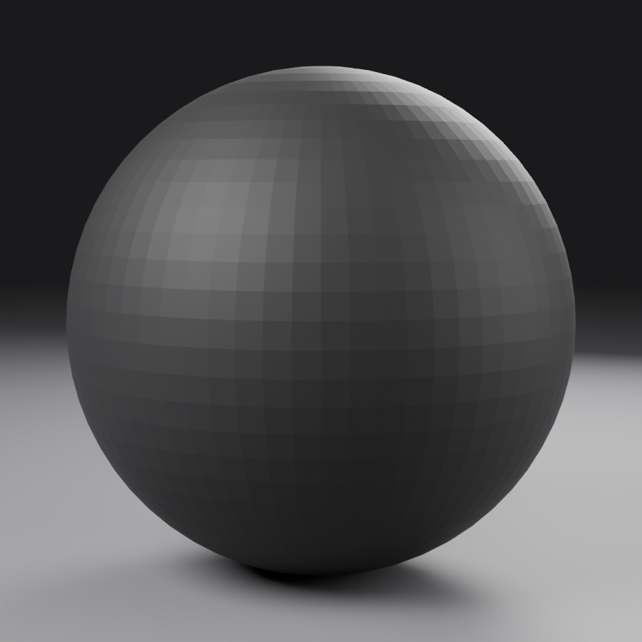
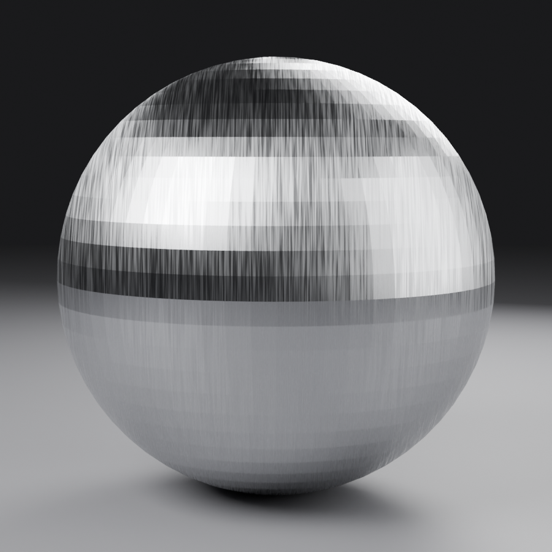
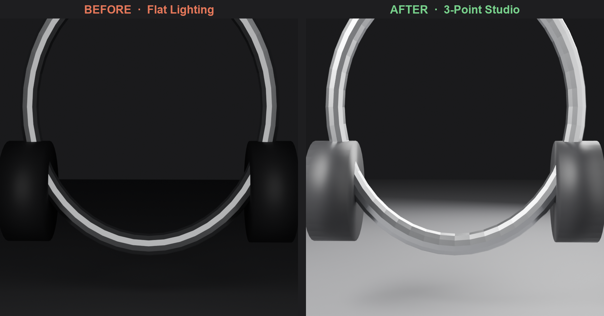
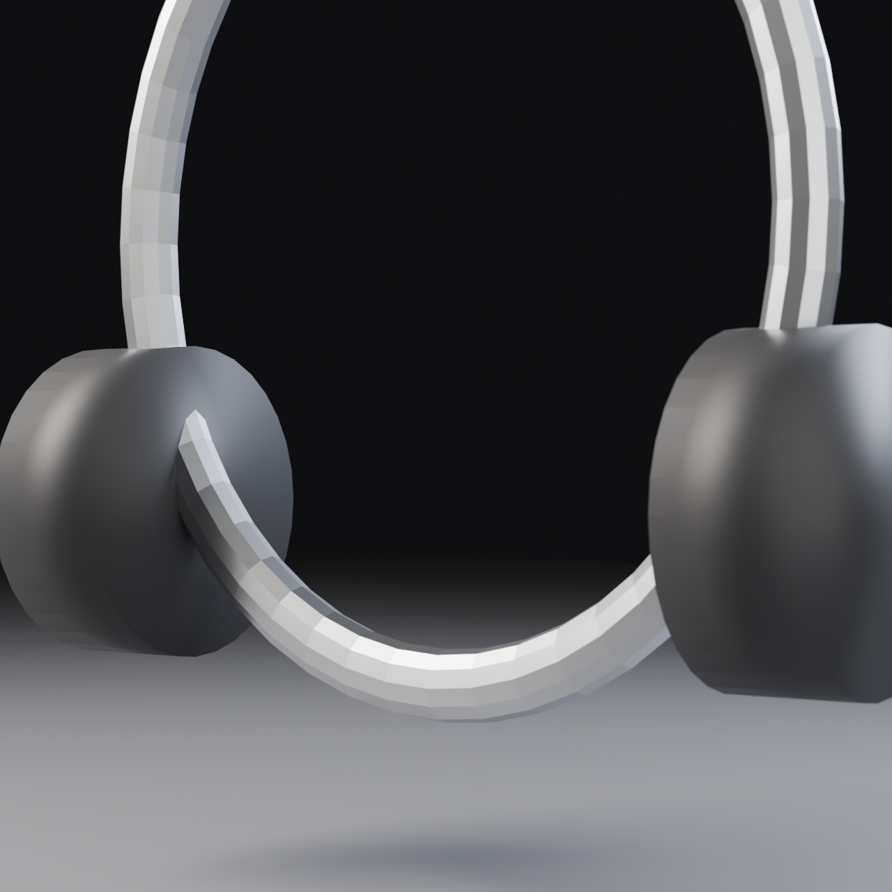

🎯 Lesson 48: Product Visualization Project
Welcome to your first complete portfolio project! In this comprehensive lesson, you'll create a professional product visualization from start to finish. Think of this as your chance to combine everything you've learned—modeling, materials, lighting, camera work, and rendering—into one stunning, portfolio-worthy piece. By the end, you'll have created something you can proudly show potential clients or employers!
📋 What You'll Learn
- Complete Project Workflow: From concept to final render
- Product Modeling: Creating clean, professional geometry
- Material Excellence: Achieving photorealistic surfaces
- Studio Lighting: Professional product photography techniques
- Camera Mastery: Composition for maximum impact
- Rendering Strategy: Optimized settings for quality results
- Post-Processing: Final polish in the Compositor
⏱️ Estimated Time: 4-6 hours (take your time, this is your showcase piece!)
🎯 Project: Complete product visualization render
In This Lesson
🎬 Project Overview and Planning
Creating a professional product visualization is like being a director, photographer, and set designer all at once. You're not just making a 3D model—you're crafting a complete visual story that showcases a product in its best light. This is the kind of work that companies pay thousands of dollars for, and by the end of this lesson, you'll know exactly how to deliver it.
🎯 The Professional Mindset: Product visualization isn't about showing what a product looks like—it's about making people want that product. Your job is to create images so compelling that viewers can imagine owning and using the item.
What Makes Great Product Visualization?
Before we dive into the technical work, let's understand what separates amateur product renders from professional ones. Think about the last time you saw a product photo that made you stop scrolling—what caught your attention?
✨ The Five Pillars of Professional Product Visualization
1. Clean Geometry:
Your model should be technically perfect—no stray vertices, no overlapping faces, no shading artifacts. Professional product viz requires precision because every imperfection will be magnified under studio lighting. Think of it like jewelry making—every edge needs to be intentional.
2. Realistic Materials:
Materials should be physically accurate and respond to light naturally. That glossy smartphone screen needs to reflect like real glass. That matte plastic housing needs to show the subtle variation of real-world surfaces. You're not just applying colors—you're simulating actual physics.
3. Professional Lighting:
Lighting makes or breaks product visualization. You need the controlled, dramatic look of a professional photo studio—not the flat, boring lighting of an office. Your lights should sculpt the product's form, highlight key features, and create visual interest through contrast.
4. Strong Composition:
Camera placement and framing should guide the viewer's eye to the most important features. Use the rule of thirds, leading lines, and depth of field to create images that feel intentional and professional. Every angle should tell the product's story.
5. Context and Story:
The best product visualizations don't exist in a void—they tell a story or suggest use. A headphone render might show a sleek desk setup. A perfume bottle might be surrounded by complementary materials. Context helps viewers emotionally connect with the product.
The Complete Workflow Overview
Product visualization follows a specific workflow that professionals use across the industry. Understanding this pipeline will help you work efficiently and catch problems early:
💡 Pro Workflow Tip
Notice how we don't jump straight to lighting and rendering? That's deliberate. Each stage builds on the previous one, and fixing problems gets exponentially harder the further you go. A modeling issue that takes 5 minutes to fix early might cost you hours if you discover it after you've set up all your materials and lighting.
Think of it like cooking—you prep all your ingredients (modeling), season them (materials), then cook and plate (lighting and rendering). You don't season the finished dish!
Time Investment and Expectations
Let's be realistic about time. Creating professional product visualization takes hours, not minutes. Here's a typical time breakdown for a medium-complexity product:
| Stage | Time Investment | Percentage of Project |
|---|---|---|
| Planning & Reference | 30-60 minutes | 10-15% |
| Modeling | 2-3 hours | 35-40% |
| UV Unwrapping | 30-45 minutes | 8-10% |
| Materials | 1-1.5 hours | 15-20% |
| Lighting & Camera | 45-60 minutes | 12-15% |
| Test Renders & Iteration | 30-45 minutes | 8-10% |
| Final Render & Post | 30-45 minutes | 8-10% |
⚠️ Reality Check: Perfectionism vs. Progress
It's easy to spend 8 hours perfecting one tiny detail that nobody will notice. Professional product visualization is about knowing where to invest your time for maximum impact. Your goal isn't perfection—it's professional quality within reasonable time.
The 80/20 Rule: 80% of your visual quality comes from 20% of your effort. Focus on getting the big things right (form, lighting, composition) before obsessing over tiny details. You can always iterate later!
🎯 Choosing Your Product
Your first major decision is choosing what product to visualize. This might seem simple, but it's actually strategic. The right choice will showcase your skills while remaining achievable within your timeline. The wrong choice might leave you frustrated or with an incomplete project.
Ideal Products for Your First Project
As a first major product visualization, you want something that's challenging enough to be impressive but not so complex that it becomes overwhelming. Here's how to think about it:
✅ Great First Product Choices
Consumer Electronics (Medium Complexity):
- Headphones/Earbuds: Curved surfaces, multiple materials, recognizable appeal
- Smartwatch/Fitness Tracker: Clean geometry, screen possibilities, lifestyle appeal
- Camera/Lens: Cylindrical forms, glass elements, professional tech appeal
- Wireless Speaker: Simple forms, fabric/metal contrast, modern aesthetic
Lifestyle Products (Lower-Medium Complexity):
- Perfume/Cologne Bottle: Glass materials, elegant lighting opportunities, fashion appeal
- Water Bottle: Transparent materials, liquid simulation potential, eco-friendly angle
- Sunglasses: Curves, glass/metal, luxury appeal
- Watch: Precision modeling, mixed materials, timeless appeal
Packaging & Containers (Lower Complexity):
- Cosmetic Container: Smooth surfaces, premium materials, beauty industry relevance
- Food/Beverage Can: Label design opportunity, metallic materials, clean geometry
- Product Box: Typography practice, material variety, contextual potential
❌ Avoid These for Your First Project
Too Complex:
- Smartphones (screens, buttons, ports, logos—hundreds of details)
- Laptops (keyboards, hinges, screens, complex housing)
- Automobiles (even toy cars are deceptively complex)
- Furniture with fabric (cloth simulation is advanced)
Too Simple:
- Basic geometric shapes (cube, sphere—won't showcase skills)
- Flat objects (coasters, cards—limited visual interest)
- Single-material items (boring, won't show material mastery)
Legal Issues:
- Exact branded products with logos (trademark concerns)
- Products you haven't researched (might miss critical details)
- Weapons or controversial items (limit portfolio appeal)
The Decision Framework
Still unsure? Use this decision framework to evaluate your options:
| Criteria | Questions to Ask | Ideal Answer |
|---|---|---|
| Modeling Complexity | Can I model this in 2-3 hours with my current skills? | Yes, with some challenge |
| Material Variety | Does it have 2-4 distinct material types? | Yes (glass, metal, plastic, fabric) |
| Visual Interest | Does it have curves, details, or interesting forms? | Yes, recognizable and appealing |
| Lighting Potential | Will it look good under studio lighting? | Yes, reflections and highlights |
| Portfolio Value | Will people recognize and appreciate this? | Yes, broad appeal |
| Reference Availability | Can I find 10+ quality reference images? | Yes, from multiple angles |
✅ Recommendation: Start with Headphones
For this lesson, I'm going to guide you through creating wireless over-ear headphones. Here's why this is an ideal first project:
- Perfect complexity: Challenging but achievable curves and forms
- Material variety: Matte plastic, glossy accents, metal hinges, fabric/leather padding
- Recognizable appeal: Everyone knows headphones—instant visual connection
- Lighting opportunities: Curved surfaces show beautiful light falloff
- Contextual potential: Easy to place in lifestyle or tech scenes
- Portfolio strength: Shows modeling, materials, and lighting mastery
But feel free to choose your own! Just use the framework above to ensure it's suitable. Everything we cover will apply to whatever product you choose.
📸 Reference Collection and Analysis
Now that you've chosen your product, it's time to gather references. This isn't just about finding a few images—it's about building a complete understanding of your product from every angle. Think of yourself as a detective studying your subject. Professional product visualization starts with professional research.
🎨 The Artist's Secret: Great 3D artists don't have better imagination—they have better references. The difference between amateur and professional work often comes down to how thoroughly you studied your subject before opening Blender.
What You Need to Collect
Your reference library should give you a 360-degree understanding of your product. Here's what to gather:
📚 Complete Reference Checklist
1. Technical References (Form & Construction):
- Front view: Straight-on, level shot showing primary face
- Side view: Profile showing depth and thickness
- Top view: Overhead showing overall proportions
- Bottom view: Underside details (if visible/relevant)
- Back view: Rear details, ports, connections
- 3/4 views: Angled shots showing multiple sides at once
- Detail shots: Close-ups of buttons, hinges, textures, logos
2. Material References (Surface Quality):
- Material close-ups: How does each material look under different lighting?
- Wear and weathering: How do materials age or show use?
- Surface variation: Is it perfectly smooth or slightly textured?
- Reflection quality: Sharp reflections or soft/blurred?
- Color accuracy: Multiple photos to average true colors
3. Context References (Presentation Style):
- Professional product photos: How do pros shoot this product?
- Advertising imagery: What angles and compositions work best?
- Lifestyle shots: How is the product used in real scenarios?
- Lighting styles: What lighting mood suits this product?
- Background treatments: Clean studio vs. contextual environments
Where to Find Quality References
Not all reference images are created equal. Here's where to find the best material:
| Source | Best For | Tips |
|---|---|---|
| Manufacturer Websites | Clean product shots, accurate colors, specifications | Download highest resolution available |
| E-commerce Sites | Multiple angles, 360° views, user photos | Amazon, Best Buy often have great detail shots |
| Review Videos | Real-world handling, scale reference, movement | Pause and screenshot at useful angles |
| Professional Reviews | High-quality photography, detail shots, comparisons | Tech sites like The Verge, CNET, Engadget |
| Pinterest/Behance | Artistic presentation, lighting inspiration, composition | Good for stylistic direction, not accuracy |
| Instagram/Social Media | Lifestyle context, real-world use, color accuracy | Look for unfiltered photos when possible |
💡 Pro Research Tip: The Screenshot Method
For products like headphones, find a high-quality unboxing or review video on YouTube. These videos often rotate the product slowly, giving you perfect orthographic-style views. Pause the video at key angles and take screenshots—instant reference library!
Bonus: You can see how materials reflect light in motion, which helps you understand their properties better than static photos.
Organizing Your References
Having 50 random images in a folder isn't helpful—you need organization. Here's a simple but effective system:
📁 Recommended Folder Structure
Headphones_Project/ ├── References/ │ ├── 01_Technical/ │ │ ├── front_view.jpg │ │ ├── side_view.jpg │ │ ├── top_view.jpg │ │ ├── back_view.jpg │ │ └── detail_hinge.jpg │ ├── 02_Materials/ │ │ ├── matte_plastic.jpg │ │ ├── metal_accents.jpg │ │ ├── ear_padding.jpg │ │ └── headband_texture.jpg │ ├── 03_Lighting/ │ │ ├── studio_example_1.jpg │ │ ├── studio_example_2.jpg │ │ └── product_shot_inspiration.jpg │ └── 04_Context/ │ ├── desk_setup.jpg │ ├── lifestyle_shot.jpg │ └── composition_reference.jpg ├── Blender_Files/ └── Final_Renders/
Pro tip: Name your files descriptively. "IMG_0234.jpg" tells you nothing. "headphones_side_right_profile.jpg" is instantly useful.
Analyzing Your References
Collecting references is only half the battle—now you need to study them. This is where beginners often skip ahead too quickly. Spend 15-20 minutes really looking at your references before modeling anything.
🔍 The Reference Analysis Checklist
Proportions & Measurements:
- What's the overall width-to-height ratio?
- How thick are various components?
- What are the relative sizes of different parts?
- Are there any technical specs available (actual dimensions)?
Forms & Curves:
- Are edges sharp or rounded? (How much beveling?)
- What kind of curves? (Circular arcs? Complex splines?)
- Where do surfaces transition from flat to curved?
- Are there any subtle surface variations?
Details & Features:
- What details are essential vs. optional?
- Which elements will be most visible in final render?
- Where are seams, gaps, and panel lines?
- What details can be faked with materials vs. modeled?
Materials & Finishes:
- How many distinct material types are there?
- Which materials are glossy vs. matte?
- Are there any transparent or translucent parts?
- Do materials have visible texture (fabric weave, brushed metal)?
The Reference Board Technique
Here's a technique professionals use: create a reference board—a single image that combines your most important references. This becomes your at-a-glance guide while modeling.
🎨 Creating Your Reference Board
- Open a photo editor (Photoshop, GIMP, Photopea, even Paint)
- Create a large canvas (3000x2000px works well)
- Arrange your key references:
- Top row: Front, side, top views (for proportions)
- Middle row: 3/4 angle views (for overall form understanding)
- Bottom row: Detail shots of important features
- Side panel: Material close-ups
- Add notes/annotations if helpful (measurements, material names)
- Save as high-res JPG and keep it open on a second monitor or phone
Why this works: You can glance at one image and see everything you need without hunting through folders. It's like having a cheat sheet that's always visible.
⚠️ Common Reference Mistakes to Avoid
- Using only one angle: You'll miss critical proportions and details
- Low-resolution images: Can't see details when you zoom in
- Filtered/edited photos: Colors might be inaccurate
- Inconsistent products: Mixing references from different models or versions
- Skipping material study: Leading to flat, unrealistic surfaces
- Not enough detail shots: Guessing at small features instead of knowing
Using References in Blender
Once your references are organized, you'll bring them directly into Blender to guide your modeling. Here are the most effective methods:
🖼️ Reference Images in Blender
Method 1: Reference Images (Background Images)
Import orthographic views (front, side, top) as background images in your viewport. These act like blueprints you can model over.
- Best for: Matching exact proportions and alignment
- Setup: Add → Image → Reference, then position and scale
- Shortcut: Alt+B to toggle visibility
Method 2: Image Planes
Import reference as an actual plane object in 3D space. More flexible than background images.
- Best for: 3/4 views and detail references you want to see from multiple angles
- Setup: Add → Image → Images as Planes (enable addon first)
- Tip: Put on separate collection you can hide/show easily
Method 3: Second Monitor/Device
Keep your reference board open on another screen or tablet while modeling.
- Best for: Overall workflow, doesn't clutter viewport
- Advantage: Can see references and model simultaneously
- Tip: Use PureRef (free software) to organize floating reference windows
🎯 Remember: References aren't constraints—they're guidelines. Your goal isn't to create an exact copy (that's why patents exist), but to create something that feels authentic and shows you understand the product category. Feel free to simplify, stylize, or improve upon your references.
🔧 Modeling Strategy and Best Practices
Before you create a single vertex, you need a modeling strategy. Jumping into modeling without a plan is like building a house without blueprints—you might end up with something, but it won't be efficient or professional. Let's develop a smart approach that will save you hours of frustration.
Understanding Your Product's Structure
Every product can be broken down into primitive shapes and modeling techniques. Your job is to identify the best approach for each component. Think of it like being a mechanic—you need to understand how the pieces fit together before you can build it.
🎯 Modeling Approach Decision Tree
For Headphones (Our Example):
Component 1: Ear Cups (Curved, organic forms)
- Approach: Subdivision surface modeling
- Start with: Cube or UV sphere, shape with minimal geometry
- Why: Smooth curves are perfect for SubD workflow
- Key technique: Edge flow, loop cuts, supporting edges
Component 2: Headband (Long curved form)
- Approach: Curve-based modeling or array modifier
- Start with: Bezier curve or simple mesh with array
- Why: Maintains smooth arc, easy to adjust curvature
- Key technique: Curve to mesh, curve modifiers, tapering
Component 3: Metal Hinges (Precise mechanical)
- Approach: Hard surface modeling with booleans
- Start with: Cylinders, precise dimensions
- Why: Clean, technical parts need precision
- Key technique: Boolean operations, weighted normals, bevels
Component 4: Padding (Soft cushions)
- Approach: Subdivision surface with displacement
- Start with: Simple mesh, high subdivision
- Why: Needs to look soft and deformable
- Key technique: Smooth shading, material displacement, subtle asymmetry
The Component-Based Modeling Method
Professional product visualization uses a component-based approach. Instead of trying to model everything as one piece, you build individual components that you'll assemble later. This is exactly how real products are manufactured!
✅ Benefits of Component-Based Modeling
- Easier to manage: Work on one piece at a time without affecting others
- Better organization: Each component gets its own collection/layer
- Reusability: Mirror or duplicate components (left/right ear cups)
- Easier materials: Each component can have distinct materials
- Simpler troubleshooting: If something's wrong, isolate that component
- Professional workflow: How studios actually work
Modeling Order: Build Smart, Not Hard
The order you model components matters. Build from large to small, simple to complex, and always establish your base proportions first.
📋 Recommended Modeling Order (Headphones Example)
Phase 1: Establish Scale & Proportions (30 minutes)
- Create blocking meshes: Simple shapes showing overall size and placement
- Rough ear cup shape (cube or sphere, minimal geometry)
- Headband arc (curve or simple mesh)
- Hinge positions (single cylinders as placeholders)
- Check proportions: Does it match your reference?
- Adjust until correct: Much easier now than after detailing!
Phase 2: Main Forms (60-90 minutes)
- Refine ear cups: Add edge loops, establish curvature, create speaker opening
- Complete headband: Final shape, thickness, curvature, end caps
- Build hinges: Cylindrical components, pivot points, connection geometry
Phase 3: Secondary Forms (45-60 minutes)
- Ear padding: Cushion geometry, soft rounded edges
- Headband padding: Underside cushioning or texture
- Structural details: Screws, seams, panel lines (subtle)
Phase 4: Fine Details (30-45 minutes)
- Logos or branding: Simple geometry or save for materials
- Buttons/controls: Power button, volume controls
- Port details: Charging port, audio jack (if visible)
- Final bevels: Soften all hard edges for realism
💡 Pro Modeling Philosophy: The 3-Pass Approach
Pass 1 - Blocking (Rough Shapes, 20% of time):
Create extremely simple versions of all major components. Everything looks crude, but proportions are correct. This is your foundation—get it right here and everything else is easier.
Pass 2 - Refinement (Main Forms, 50% of time):
Take each blocked shape and refine it to near-final quality. Add subdivision, perfect curves, establish major features. Model looks ~80% complete but lacks fine details.
Pass 3 - Detailing (Polish, 30% of time):
Add the finishing touches—bevels, small features, subtle variations. This is where good becomes great, but it's also where you can waste time on things nobody will notice. Be strategic!
Why this works: You can stop at any pass and have a usable model. If you run out of time, a well-proportioned simple model beats a poorly-proportioned detailed one every time.
Essential Modeling Guidelines
These are the non-negotiable rules for clean, professional product modeling:
✅ Product Modeling Commandments
1. Maintain Clean Topology
- Quads wherever possible (4-sided faces)
- No triangles in areas that will subdivide
- No overlapping geometry
- No internal faces (faces inside the mesh you can't see)
2. Use Proper Scale
- Model at real-world scale (headphones ~20cm wide)
- Apply scale (Ctrl+A) before any operations
- Use reference objects for size comparison
3. Non-Destructive Workflow
- Use modifiers instead of applying operations
- Keep subdivision separate from base mesh
- Name everything clearly
- Organize with collections
4. Bevel EVERYTHING
- Real objects have no perfectly sharp edges
- Even tiny bevels (0.5mm) catch light realistically
- Use Bevel modifier for flexibility
- Or use manual beveling for specific control
5. Symmetry When Possible
- Use Mirror modifier for symmetrical objects
- Model one side, mirror the other
- Apply mirror only when asymmetry is needed
6. Save Incrementally
- Save versions: headphones_v01, headphones_v02, etc.
- Save before major changes or experiments
- You can always go back if something goes wrong
Common Modeling Pitfalls (And How to Avoid Them)
Let's talk about the mistakes that will cost you the most time. I've made all of these errors, and I want to save you the frustration:
❌ Modeling Mistakes That Hurt
Mistake 1: Adding Too Much Detail Too Early
- Problem: Modeled tiny screws and logos before establishing basic proportions
- Result: Proportions are wrong, now you have to redo all that detailed work
- Solution: Block out ALL components first, check proportions, THEN detail
Mistake 2: Working Without Subdivision Preview
- Problem: Modeling looks great in Edit Mode, terrible when subdivided
- Result: Unexpected bumps, pinching, artifacts everywhere
- Solution: Always model with Subdivision Surface modifier ON (in preview mode)
Mistake 3: Ignoring Edge Flow
- Problem: Random edge placement, topology doesn't follow the form
- Result: Weird shading, hard to edit later, looks amateur
- Solution: Edge loops should follow the natural contours and curves of your object
Mistake 4: Not Using the Right Shading
- Problem: Everything left on flat shading or auto-smooth off
- Result: Faceted appearance, can't see how model really looks
- Solution: Right-click → Shade Smooth, enable Auto Smooth (30° is good starting point)
Mistake 5: Modeling Single Continuous Mesh
- Problem: Everything is one object—ear cups, headband, padding, all connected
- Result: Can't assign different materials easily, hard to edit sections, chaos
- Solution: Separate components as different objects, use collections to organize
Mistake 6: Forgetting Real-World Scale
- Problem: Model is 500 Blender units wide (500 meters in reality!)
- Result: Lighting acts weird, depth of field doesn't work, physics breaks
- Solution: Check dimensions in Properties panel, model at real scale
✅ Quick Quality Check: Is Your Modeling Pro-Level?
Before moving to materials, run this checklist:
- ☑️ All components are separate objects (not one giant mesh)
- ☑️ Proportions match reference images
- ☑️ Mostly quad topology (minimal triangles)
- ☑️ All objects have real-world scale applied (Ctrl+A → Scale)
- ☑️ Smooth shading enabled with auto-smooth
- ☑️ All hard edges have small bevels
- ☑️ No Z-fighting (overlapping geometry)
- ☑️ No internal faces or stray vertices
- ☑️ Everything named clearly (EarCup_L, Headband, Hinge_R, etc.)
- ☑️ Objects organized in collections
If you can check all these boxes, you're ready to move forward!
🎯 Philosophy Check: Remember, your model doesn't need to be perfect—it needs to be professional. Perfect is the enemy of done. If your model looks good in the viewport with subdivision and smooth shading, and your proportions match your reference, you're ready for the next step. Don't obsess over invisible details!
🎬 Scene Planning and Composition
Before we even touch lighting or materials, we need to plan our scene. This is where art direction happens—where you decide the story you want to tell and the mood you want to create. Think of yourself as a film director setting up a shot.
Defining Your Visual Goal
Product visualization can go many directions. Are you creating a clean, Apple-style minimalist shot? A dramatic, moody advertisement? A lifestyle scene with context? Your choice here drives every decision that follows.
🎨 Common Product Visualization Styles
Style 1: Clean Studio Shot
- Vibe: Minimal, professional, lets product speak for itself
- Background: Plain white, soft gradient, or simple surface
- Lighting: Soft, even, 3-point studio setup
- Best for: E-commerce, product catalogs, technical products
- Example products: Electronics, tools, appliances
Style 2: Dramatic Hero Shot
- Vibe: Bold, eye-catching, advertising-style
- Background: Dark or colored backdrop, sometimes with texture
- Lighting: Strong directional light, deep shadows, high contrast
- Best for: Premium products, marketing materials, portfolio pieces
- Example products: Luxury items, fashion accessories, high-end tech
Style 3: Lifestyle Context
- Vibe: Relatable, aspirational, shows product in use
- Background: Desk, table, shelf—real-world environment
- Lighting: Natural-looking, window light, soft ambient
- Best for: Social media, lifestyle brands, storytelling
- Example products: Consumer goods, lifestyle products, accessories
Style 4: Technical/Exploded View
- Vibe: Informative, detailed, shows construction
- Background: Simple or technical grid
- Lighting: Bright, even, no dramatic shadows
- Best for: Technical documentation, patents, engineering
- Example products: Mechanical items, tech internals, complex assemblies
💡 Recommendation for Your First Project
I suggest starting with Style 2: Dramatic Hero Shot for your headphones. Here's why:
- Portfolio impact: Looks impressive, shows lighting skills
- Focuses on product: Dark background eliminates need for complex scene
- Emphasizes form: Dramatic lighting sculpts the shapes beautifully
- Technical learning: Teaches studio lighting fundamentals
- Quick setup: Simpler than full lifestyle scene but more interesting than plain white
Once you master this, you can easily adapt the same model to other styles!
Composition Fundamentals for Product Viz
Great composition isn't accidental—it follows principles that have worked for centuries in photography and painting. Let's apply them to 3D product visualization:
📐 Composition Rules for Product Photography
Rule of Thirds:
Imagine your frame divided into a 3×3 grid. Place your product or key features at the intersection points, not dead center. This creates dynamic, interesting compositions that feel professional rather than amateur.
For headphones: Position the ear cup at a thirds intersection, with the headband sweeping across the frame.
Leading Lines:
Use lines in your product to guide the viewer's eye. The curve of a headband, the angle of a hinge, or the sweep of a cable all act as visual pathways.
For headphones: The headband arc naturally leads eye from one ear cup to the other—use this!
Depth and Layering:
Create depth with foreground, middle ground, and background elements. Even subtle depth cues make images more engaging and three-dimensional.
For headphones: Angle product so one ear cup is closer to camera, creating depth through perspective.
Negative Space:
Don't fill every pixel with product. Empty space (negative space) gives the eye room to breathe and makes the product feel premium and uncluttered.
For headphones: Dark background with lots of negative space emphasizes the product's form.
Clear Focal Point:
The viewer should immediately know where to look. Use lighting, focus, composition, and contrast to make one area the obvious star.
For headphones: Main ear cup with logo or most distinctive feature should be the sharpest, best-lit area.
Camera Angle Psychology
Different camera angles communicate different messages. Understanding this helps you choose the right perspective for your product story:
| Angle | Psychology | Best For |
|---|---|---|
| Eye Level | Neutral, honest, approachable | Everyday products, realistic documentation |
| Slightly Above (15-30°) | Overview, control, professional | Most product photography, gives good view of top features |
| Low Angle (Hero Shot) | Powerful, impressive, premium | Luxury products, dramatic marketing shots |
| High Angle (Bird's Eye) | Comprehensive, organized, clean | Flat lay style, organization products, lifestyle shots |
| 3/4 View | Complete, dimensional, informative | Most versatile—shows multiple sides at once |
✅ Recommended Starting Composition
For Your Headphones Hero Shot:
- Camera angle: Slightly above eye level (20° from horizontal)
- View: 3/4 angle showing front-left side
- Position: Main ear cup at right-third intersection
- Rotation: Slight tilt for dynamic energy (not perfectly flat)
- Framing: Product fills 50-60% of frame (not too small, not edge-to-edge)
- Focus: Shallow depth of field, front ear cup sharp, back slightly soft
Why this works: It's the "classic product shot" angle—trusted by professionals because it shows form, provides visual interest, and looks premium without being overly dramatic.
Scene Elements and Props
Even in a "simple" studio shot, you might want a few scene elements. Less is more, but strategic additions can enhance your composition:
🎯 Strategic Scene Elements
Essential Elements:
- Surface plane: Simple plane or curved backdrop for product to sit on
- Shadow catcher: Invisible plane that only receives shadows (makes product float)
- Fill cards: Simple planes near product that reflect light into shadows
Optional Enhancement Elements:
- Subtle texture: Slight variation in background (fabric, concrete, wood grain—very subtle!)
- Complementary props: Smartphone, coffee cup, notebook—must relate to product
- Material swatches: Small pieces showing product materials or colors
- Atmospheric elements: Light rays, subtle fog, particles (use sparingly!)
Elements to Avoid:
- ❌ Competing products (draws attention away)
- ❌ Cluttered backgrounds (busy patterns, too many objects)
- ❌ Unrelated items (random objects that confuse the story)
- ❌ Too many colors (keep palette cohesive)
⚠️ The Minimalism Principle
When in doubt, remove elements rather than add them. A common beginner mistake is adding too many "interesting" elements that end up making the composition messy and confused.
Your product is the star. Everything else in frame should support that, not compete with it. If you look at your scene and your eye wanders away from the product, something needs to be removed or toned down.
Color and Mood Planning
Your color palette dramatically affects the mood and perception of your product. Plan this before you start lighting or texturing:
🎨 Color Palette Strategies
Monochromatic (One Color Family):
- Vibe: Sophisticated, cohesive, focused
- Example: Black headphones on dark gray background with cool lighting
- Works when: You want elegant, minimalist feel
Complementary (Opposite Colors):
- Vibe: Dynamic, energetic, eye-catching
- Example: Orange accent lights on blue product, or vice versa
- Works when: You want high visual impact and drama
Analogous (Adjacent Colors):
- Vibe: Harmonious, pleasant, comfortable
- Example: Blue product with purple-blue background and cyan highlights
- Works when: You want subtle sophistication
Neutral with Accent:
- Vibe: Professional, controlled, premium
- Example: Gray/black scene with one small colored element (LED, logo)
- Works when: You want focus on form rather than color
🎯 Pro Tip: Look at your reference board—specifically the "lighting inspiration" section. What colors do professional photographers use for similar products? Steal their color palettes! There's no shame in using proven combinations that work.
⚙️ Setting Up Your Project File
Now we're ready to actually open Blender and set up our project properly. Organization at the start saves massive headaches later. Let's build a professional project structure that would make any studio proud.
Creating the Master Project File
Your project file is your workspace for the next several hours. Set it up right from the beginning:
🗂️ Project Setup Checklist
Step 1: File Management
- Create a dedicated project folder:
Headphones_ProductViz - Inside, create subfolders:
BlenderFiles- Your .blend filesReferences- Your organized reference imagesTextures- Any texture files you'll useRenders- Final and test rendersAssets- Any additional 3D assets
- Save your first file as:
headphones_v01.blend
Step 2: Blender Scene Configuration
- Set render engine: Switch to Cycles (Render Properties → Render Engine → Cycles)
- Set device: GPU Compute if available (System → Cycles Render Devices)
- Set units: Scene Properties → Units → Metric (makes real-world scale easy)
- Enable relevant addons:
- Node Wrangler (Edit → Preferences → Add-ons)
- Import Images as Planes (for references)
Step 3: Scene Organization
- Delete default cube, light, and camera (we'll add proper ones)
- Create collections (Outliner → right-click → New Collection):
Product- Your headphones componentsReferences- Reference image planesLighting- All lightsScene- Background, surface, environmentCamera- Camera and any empties for animation
World Settings and Environment
Before modeling anything, let's configure our world environment. This affects how you see your work and ensures consistent lighting during modeling:
🌍 World Environment Setup
Viewport Display (While Working):
- Shading workspace → Switch viewport shading to Material Preview (sphere icon)
- Viewport Shading dropdown → Scene World
- Enables real-time material preview
- Shows how materials react to environment lighting
- For even better preview: Switch to Rendered view (fourth sphere icon)
- Real-time ray-traced preview
- Slower but most accurate
World Settings (Shader Editor):
- Shader Editor → Switch to "World" mode (top dropdown)
- Add → Texture → Environment Texture
- Connect Color → Background → Surface
- Download a neutral HDRI (recommend: "studio_small_03" from Poly Haven)
- Load HDRI into Environment Texture node
- Set Strength to 0.8-1.0 for modeling phase
Why this matters: A good HDRI gives you instant realistic reflections and lighting while you work. You can see how metallic and glossy materials will behave without setting up lights yet.
💡 HDRI Quick Guide
Best free HDRI sources:
- Poly Haven (polyhaven.com): Best quality, completely free, no signup
- For product viz: Look for "studio" HDRIs
- Download 4K resolution, .exr format
- HDRI Haven: Merged with Poly Haven, same quality
- Blender Built-in: Basic options in Blender's assets
Recommended starting HDRIs for product viz:
- "studio_small_03" - Soft, even, neutral
- "photo_studio_01" - Bright professional studio
- "studio_small_09" - Dramatic with strong key light
Camera Setup (The Photographer's Eye)
Your camera is your final output frame—everything you build is for what this camera sees. Set it up thoughtfully:
📷 Professional Camera Configuration
Adding and Positioning Camera:
- Add → Camera (Shift+A → Camera)
- Position roughly where you want your viewpoint
- Select camera: G to move, R to rotate
- Numpad 0: View through camera
- In camera view: N panel → View → Camera to View (lets you navigate, then locks)
- Name it clearly: "Camera_Main" or "Cam_Hero_Shot"
- Move to Camera collection
Camera Settings (Properties Panel):
Lens Settings:
- Focal Length: 50-85mm for product photography
- 50mm: Natural, realistic perspective
- 85mm: Flattering, slight compression (my recommendation)
- 35mm: Wider, more environmental context
- Avoid: Wide angles (18-35mm) distort product, fish-eye effect
Depth of Field (DOF):
- Enable DOF: Camera Properties → Depth of Field → Check it
- Focus Object: Select main ear cup as focus object
- Click eyedropper → select the object you want sharp
- Or set Focus Distance manually (measure with Empty)
- F-Stop: Controls blur amount
- f/2.8: Strong blur, dramatic (product photography standard)
- f/5.6: Moderate blur, still artistic
- f/8-11: Minimal blur, more product in focus
- Recommendation: Start with f/2.8 for hero shot aesthetic
Sensor and Output:
- Sensor Size: Leave at 36mm (Full Frame equivalent)
- Shift X/Y: Leave at 0 (for perspective correction, advanced)
✅ Recommended Camera Starting Position
For your headphones hero shot:
- Distance: 0.6-0.8 meters from product center (comfortable portrait distance)
- Height: Slightly above product (10-15cm above ear cup center)
- Angle: 20-30° from horizontal (slight downward tilt)
- Orientation: 45° horizontal angle (3/4 view, not straight-on)
- Focal Length: 85mm
- F-Stop: f/2.8
These are starting values—you'll fine-tune during composition later!
Render Settings: Quality vs. Speed
Render settings are a balance. During workflow, you want fast previews. For final output, you want quality. Let's configure both:
⚙️ Render Settings Strategy
Output Resolution (Render Properties → Output):
- Final Quality: 1920×1080 (Full HD) minimum, 3840×2160 (4K) for portfolio
- Set Resolution X: 1920, Y: 1080 (or 3840 × 2160)
- Resolution %: 100% for final, 50% for tests
- Aspect Ratio: Keep 16:9 (1.778) for standard
- Or try 1:1 (square) for social media
- Or 4:5 (portrait) for Instagram
Cycles Settings (Render Properties):
For Test Renders (Fast Preview):
- Max Samples: 128-256 (noisy but fast)
- Denoise: Enable OpenImageDenoise (cleans up noise)
- Light Paths → Max Bounces: 4 (reduce from default 12)
- Resolution: 50% of final
- Result: Renders in 1-3 minutes, good enough to judge composition/lighting
For Final Renders (High Quality):
- Max Samples: 1024-2048 (clean, noise-free)
- Denoise: Enable (polishes final image)
- Light Paths → Max Bounces: 12 (full quality light simulation)
- Resolution: 100%
- Result: Takes 10-30 minutes depending on GPU, but professional quality
| Setting | Test Renders | Final Render |
|---|---|---|
| Max Samples | 128-256 | 1024-2048 |
| Resolution % | 50% | 100% |
| Denoising | ON (OpenImageDenoise) | ON (OpenImageDenoise) |
| Max Bounces | 4 | 12 |
| Render Time | 1-3 minutes | 10-30 minutes |
⚠️ Render Time Reality Check
Your GPU matters significantly. These times assume a modern gaming GPU (RTX 3060 or better). If you're on CPU rendering or older hardware:
- Test renders: 5-10 minutes
- Final renders: 30-90 minutes
Don't panic! This is why we use test renders during workflow. You'll only do ONE final high-quality render at the very end. Everything else is fast previews.
Pro tip: If renders are too slow, reduce resolution to 720p (1280×720) for tests, or lower samples to 64.
Color Management Settings
Color management ensures your renders look correct and consistent across devices. These settings are crucial for professional work:
🎨 Color Management Setup
Render Properties → Color Management:
- View Transform: "Filmic" or "Standard"
- Filmic: More cinematic, handles bright highlights better (recommended)
- Standard: Flatter, more saturated, simpler
- Look: "Medium Contrast" or "None"
- Affects overall tonality and mood
- Start with "None" for neutral, adjust later if needed
- Exposure: 0.0 (adjust in Compositor if needed)
- Gamma: 1.0 (leave default)
For saving files:
- File Format: PNG for portfolio (lossless, transparency support)
- Color Depth: 8-bit for final output (16-bit if heavy post-processing)
- Compression: 15% (good balance of size/quality)
💡 Why Filmic Matters
Filmic view transform simulates how film cameras handle light, particularly bright highlights. Without it, your renders might have "blown out" white areas with no detail. With Filmic, you get that subtle roll-off into brightness that looks professional and cinematic.
Think of it like this: Your computer screen can't display the full range of brightness that light has in reality. Filmic "compresses" that range intelligently so everything looks good within screen limitations.
Reference Image Setup
Now let's bring those references into Blender so you can model with accurate proportions:
🖼️ Loading Reference Images
Method: Images as Planes (Recommended)
- Enable addon: Edit → Preferences → Add-ons → Search "Images as Planes" → Check it
- Import references: Add → Image → Images as Planes
- Select your reference images:
- Front view
- Side view
- Top view (if available)
- Position planes:
- Front view: Position in front, face toward you (front viewport)
- Side view: Position to side, face sideways (right viewport)
- Top view: Position above, face down (top viewport)
- Scale references: Estimate real size
- Adult headphones are typically ~18-20cm wide
- Scale reference planes to match
- Use real measurements if you have them!
- Set transparency: Select plane → Material Properties → Blend Mode → Alpha Blend
- Reduce opacity: In Shader Editor, set image Alpha to 0.4-0.6 (semi-transparent)
- Organize: Move all reference planes to "References" collection
✅ Reference Image Best Practices
- Make them semi-transparent: You can see through to your model
- Put on separate collection: Easy to hide/show (click eye icon)
- Lock position: Object Properties → Transform → Lock all (prevents accidental movement)
- Align to world axis: Front view on Y-axis, Side on X-axis, Top on Z-axis
- Toggle visibility easily:
- Outliner → Click eye icon on References collection
- Or use H key to hide selected objects
Pro workflow: Model with references visible, hide them for material/lighting work.
Workspace Optimization
Finally, let's optimize your workspace layout for efficient product visualization workflow:
🖥️ Recommended Workspace Layout
Primary Workspace: Modeling Phase
- Large 3D Viewport: Main area, 60-70% of screen
- Shading: Material Preview or Rendered
- Overlays: Grid, axes, camera view border
- Outliner: Top right, 15-20% screen
- Manage collections and organization
- Quick hide/show objects
- Properties Panel: Bottom right, 15-20% screen
- Quick access to modifiers, materials
Secondary Workspace: Shading
- Switch to "Shading" workspace (top tabs)
- Shader Editor: Bottom half
- Create and edit materials
- 3D Viewport: Top half
- See material changes in real-time
Lighting Workspace:
- Back to "Layout" workspace
- Camera View: Lock viewport to camera (Numpad 0)
- Rendered Viewport Shading: Fourth sphere icon (real-time ray-tracing)
- Overlays Off: Cleaner view of final result
🎯 Setup Complete Checklist
Before moving to actual modeling, verify you have:
- ☑️ Project folder structure created
- ☑️ Blender file saved as
headphones_v01.blend - ☑️ Render engine set to Cycles with GPU
- ☑️ Units set to Metric
- ☑️ Collections created and organized
- ☑️ World environment with HDRI loaded
- ☑️ Camera positioned with proper settings (85mm, f/2.8)
- ☑️ Render settings configured (test and final presets)
- ☑️ Color management set (Filmic)
- ☑️ Reference images loaded and positioned
- ☑️ Workspace layout optimized
If you can check all these boxes, congratulations! You have a professional project setup. You're ready to start modeling!
💭 Mindset Check: Take a breath. You've done a LOT of preparation, and it might feel like you haven't even started the "real work" yet. But here's the secret: this preparation IS the real work. Professional 3D artists spend 30-40% of project time on planning and setup. You've just built a foundation that will make everything else smoother, faster, and better. Now the fun begins!
🔨 Hands-On: Modeling Your Product
Now we get to the exciting part—actually building your product in 3D! This section will walk you through modeling headphones step-by-step, but remember: the techniques you learn here apply to ANY product you choose. Follow along with headphones, or adapt these methods to your own product choice.
🎯 Modeling Philosophy: We're not trying to model every microscopic detail. We're creating a model that looks professional when rendered from our chosen camera angle. If the camera won't see it, don't spend time modeling it. This is efficiency, not laziness—it's how professionals work under deadlines.
Phase 1: Blocking Out Major Forms
Let's start with the blocking phase. We'll create rough versions of all major components to establish proportions and overall structure. This is your foundation—get it right here and everything else is easier.
🎯 Blocking Workflow: Ear Cups
Step 1: Create Base Shape (10 minutes)
- Add starting geometry:
- Add → Mesh → UV Sphere (Shift+A)
- Scale to roughly match reference (S, then type 0.08 for ~8cm radius)
- Tab into Edit Mode
- Initial shape sculpting:
- Select half the sphere (box select: B key)
- Delete the back half (X → Delete Vertices)
- You now have a hemisphere—your ear cup base
- Add thickness:
- Select all (A key)
- Extrude inward (E key, then scale: S → 0.9)
- This creates the hollow interior for the speaker
Step 2: Establish Proportions (5 minutes)
- Compare to reference:
- Look at your front and side view references
- Use orthographic views (Numpad 1 for front, Numpad 3 for side)
- Scale (S) and move (G) until shape matches references
- Check from all angles:
- Rotate view (Middle Mouse Button drag)
- Does it look right from 3/4 angle?
- If not, adjust now while geometry is simple
Step 3: Apply Mirror Modifier (2 minutes)
- Prepare for symmetry:
- In Edit Mode, delete half the ear cup (the right side)
- Back to Object Mode (Tab)
- Add Mirror Modifier:
- Properties Panel → Modifiers → Add Modifier → Mirror
- Set Mirror Axis: X (so left mirrors to right)
- Enable "Clipping" (keeps center vertices merged)
- Now you have symmetrical left and right ear cups!
✅ Blocking Success Indicator
At this stage, your ear cup should look like:
- ✓ A rough, simple hemisphere shape
- ✓ Correct size compared to references
- ✓ Very simple geometry (under 500 polygons)
- ✓ Symmetrical via Mirror modifier
- ✗ NOT detailed or refined yet—that's intentional!
Remember: This is supposed to look crude. We're establishing form, not creating beauty—that comes in refinement phase.
🎯 Blocking Workflow: Headband
Method A: Curve-Based (Recommended - 15 minutes)
- Create the arc:
- Add → Curve → Bezier Curve
- Tab into Edit Mode
- Select all points (A key)
- Scale vertically to create arch shape (S → Z → drag)
- Adjust curve handles:
- Select middle point, G to move up (creates arc peak)
- Grab handles (the lines extending from points) to smooth curve
- Match the arc to your reference headband curve
- Add depth/profile:
- Curve Properties → Geometry → Bevel → Depth: 0.015m
- This makes the curve 3D (gives it thickness)
- Adjust Depth value to match headband thickness in reference
- Add resolution:
- Curve Properties → Shape → Resolution Preview U: 32
- Makes curve smoother
- Optional - Custom profile:
- For rectangular or oval headband cross-section
- Create separate curve object as profile
- Curve Properties → Geometry → Bevel → Object: [your profile curve]
- Convert to mesh when happy:
- Object Mode → Right-click curve → Convert to → Mesh
- Now you can edit as regular geometry
Method B: Array Modifier (Alternative - 10 minutes)
- Add → Mesh → Cube, scale down to headband segment size
- Add Array modifier, increase Count to ~20
- Add Curve modifier, select path curve
- Object follows curve automatically
- Less control but faster for simple forms
🎯 Blocking Workflow: Hinges/Connections
Simple Hinge Blocking (10 minutes)
- Create basic cylinder:
- Add → Mesh → Cylinder
- Rotate 90° (R → Y → 90)
- Scale to match hinge thickness in reference
- Scale length to match connection width (S → X or Y)
- Position at connection point:
- Move (G) hinge between ear cup and headband
- Check from multiple angles to ensure alignment
- Duplicate for other side:
- Can use Mirror modifier, or Shift+D to duplicate manually
- Add basic details (optional at this stage):
- Small cube for pivot screw head
- Keep it VERY simple—just suggestion of detail
📋 Blocking Phase Complete Checklist
After 30-40 minutes of blocking, you should have:
- ☑️ Basic ear cup shapes (symmetrical, roughly correct size)
- ☑️ Headband arc connecting the two ear cups
- ☑️ Simple hinge/connection geometry
- ☑️ Everything is positioned correctly relative to references
- ☑️ Proportions look right from camera angle
- ☑️ All objects named clearly and in correct collections
If these are checked, SAVE YOUR FILE as v02 and move to refinement!
Phase 2: Refining Forms
Now that blocking is complete and proportions are correct, we'll refine each component to near-final quality. This is where your product starts looking professional.
🎨 Refinement Workflow: Ear Cups (45-60 minutes)
Step 1: Add Subdivision for Smoothness
- Add Subdivision Surface modifier:
- Select ear cup object
- Add Modifier → Subdivision Surface
- Set Levels Viewport: 2, Render: 3
- Keep modifier in viewport while modeling (preview mode)
- Observe the result:
- Your geometry will become very smooth/rounded
- Edges will look soft and organic
- This is expected—we'll control it with edge loops
Step 2: Control Form with Edge Loops
- Add supporting edges where you need sharpness:
- Ctrl+R (loop cut) near edges you want crisp
- Don't confirm yet—scroll mouse wheel to add multiple loops
- Click to place, then slide to position
- Key areas for edge loops on ear cups:
- Outer rim: 2-3 edge loops close together for defined edge
- Speaker opening: Edge loops to create clear circular opening
- Transition areas: Where flat meets curved, add loop for control
- Principle: Closer edge loops = sharper edges, spread loops = smoother curves
Step 3: Create Speaker Opening
- Select center face area:
- In Edit Mode, face select (3 key)
- Select the faces where speaker grille should be
- Inset to create rim:
- I key (Inset), drag inward slightly
- This creates a border around the opening
- Extrude inward for depth:
- With center still selected, E key to extrude
- Pull inward to create recessed speaker area
- Depth should match your reference (usually 5-10mm)
- Optional - Add speaker grille detail:
- Can model simple mesh pattern
- Or save for material phase (texture-based grille)
- Recommendation: Save for materials—faster and looks just as good
Step 4: Add Subtle Asymmetry and Character
- Small variations for realism:
- Real products aren't perfectly symmetrical
- Add tiny button on one ear cup (power button)
- Small USB port on bottom edge
- Logo area (slight indent or raised surface)
- Keep it subtle:
- These should enhance, not dominate
- If something takes more than 5 minutes, consider doing it with materials instead
Step 5: Add Bevel for Realistic Edges
- Select all sharp edges:
- Edge select mode (2 key)
- Select edges that should have slight roundness
- Tip: Alt+click selects edge loops
- Apply bevel:
- Ctrl+B (Bevel), then drag outward slightly
- Scroll mouse wheel to add more segments (2-3 is good)
- Keep bevels SMALL (0.5-2mm) for realism
- Or use Bevel Modifier (non-destructive):
- Add Modifier → Bevel
- Amount: 0.001m (1mm)
- Segments: 2-3
- Angle: 30° (only bevels sharp edges)
💡 Subdivision Surface Pro Tips
The Subdivision Workflow:
- Model with SubD active: Always keep Subdivision Surface ON in viewport while modeling—what you see is what you get
- Work in low-poly: Your base mesh should be simple (quad-based, clean topology)
- Add detail with edge loops: Don't add geometry everywhere—only where needed for control
- Check with SubD off occasionally: Make sure base mesh topology is clean
Common SubD Issues & Fixes:
- Weird bumps/artifacts: Check for triangles or n-gons, convert to quads
- Too soft everywhere: Add more edge loops near edges
- Pinched corners: Add supporting edges in a loop around the pinch
- Slow viewport: Lower SubD viewport level to 1, keep render at 2-3
🎨 Refinement Workflow: Headband (30 minutes)
If using curve-to-mesh method:
- Refine the arc shape:
- Perfect the curve to match reference exactly
- Adjust Bezier handles for smooth, natural arc
- Add cross-section detail:
- If headband has rectangular cross-section, create profile curve
- Rounded top, flatter bottom is common
- Create end caps:
- Where headband connects to hinges
- Simple geometry—cylinder or box
- Should look like natural connection point
- Add adjustment slider (optional detail):
- Many headphones have size adjustment mechanism
- Simple indented lines or raised sections
- Can be modeled or saved for material textures
- Add padding/cushion (if applicable):
- Bottom of headband often has soft padding
- Extrude faces, add SubD for soft look
- Slightly puffy, organic shape
Apply modifiers carefully:
- Convert curve to mesh when final shape is perfect
- Add Subdivision Surface for smoothness
- Add edge loops to control form
- Bevel all hard edges slightly
🎨 Refinement Workflow: Hinges & Connections (30 minutes)
Step 1: Refine Basic Hinge Shape
- Start with your blocked cylinder:
- Should connect ear cup to headband
- Basic cylindrical form already positioned
- Add mechanical details:
- Select center ring of faces → Inset (I key) → Create recessed band
- Add small cylinder for pivot bolt/screw head
- Scale bolt head slightly flat (S → Z → 0.5) for realistic screw look
- Create connection housing:
- Add cube at connection point between hinge and ear cup
- Scale to small rectangular housing shape
- Bevel edges heavily for rounded mechanical look
- This is where hinge attaches to ear cup structure
Step 2: Add Adjustment Mechanism (if applicable)
- Many headphones have sliding/extending arms:
- Create two overlapping cylinders (inner and outer tubes)
- Inner slightly smaller diameter, positioned to look like it slides
- Add small notches or markers for size adjustment indicators
- Keep it simple:
- Suggestion of mechanism is enough
- Doesn't need to actually articulate/move
- Just needs to look mechanically plausible
Step 3: Polish and Integration
- Ensure clean connections:
- Hinge should look naturally attached to ear cup and headband
- No obvious gaps or floating geometry
- Can overlap slightly (will be hidden by materials/lighting)
- Add Subdivision Surface:
- Apply SubD to hinge components
- Add edge loops to keep mechanical parts crisp
- Cylindrical parts should remain cylindrical, not overly smooth
- Final beveling:
- Small bevels on all hard edges
- Particularly important on metal parts for realistic light catch
🎨 Refinement Workflow: Ear Padding/Cushions (30 minutes)
Creating Soft, Organic Cushions:
- Start with torus or extruded circle:
- Add → Mesh → Torus (for ring-shaped ear cushion)
- Or extrude circle along path for custom shape
- Scale to fit around speaker opening on ear cup
- Make it puffy and soft:
- Apply Subdivision Surface immediately (2-3 levels)
- In Edit Mode, select random vertices
- Proportional Editing (O key) enabled
- Gently pull vertices outward (G) to create subtle bulges
- Goal: Looks soft and slightly compressed, not perfectly round
- Add surface imperfections:
- Real fabric/leather cushions aren't perfectly smooth
- Very subtle displacement or bumps
- Can add with Displacement modifier (noise texture, subtle!)
- Or save for material phase (probably better)
- Create mounting ring:
- Where cushion attaches to plastic ear cup
- Thin ring or lip that tucks behind cushion
- Suggests mechanical attachment
- Positioning and asymmetry:
- Cushions should look slightly compressed (not perfect circles)
- Bottom might be slightly flatter (where it sits against surface)
- Subtle asymmetry makes it feel real, not CG
Pro tip for cushions: Less is more. Overly detailed cushions look fake. Simple, smooth forms with good materials sell the softness better than complex geometry.
Phase 3: Final Details and Polish
Your model should now be 80-90% complete. This final phase is about adding those small touches that elevate from good to great. But remember: only add details that will be visible in your final render!
⚠️ Detail Danger Zone
This is where many 3D artists waste hours. Before modeling ANY detail, ask yourself:
- Will the camera see this? (Check through camera view - Numpad 0)
- Will it be in focus? (Remember your f/2.8 DOF setting)
- Can materials do this instead? (Bump maps, normals often better than geometry)
- Does it improve the story? (Or just satisfy your perfectionism?)
If you answered "no" to any of these, skip that detail. Professional doesn't mean over-detailed—it means intentional.
✨ Strategic Final Details (45 minutes total)
Detail 1: Power Button or Control (10 minutes)
- Location: Usually on one ear cup (right side common)
- Modeling:
- Select face where button should be
- Inset (I) to create button border
- Extrude (E) very slightly inward or outward
- Add small bevel for roundness
- Alternative: Simple cube scaled flat, beveled heavily
- Keep simple: Small circular or rectangular button is sufficient
Detail 2: Charging Port (10 minutes)
- Location: Bottom edge of ear cup typically
- Modeling:
- Select faces where port should be
- Inset → Extrude inward to create recessed port
- Scale inset to USB-C or Micro-USB proportions (small rectangle)
- Add tiny interior detail if camera will see it (usually won't)
- Alternative: Can fake with material (dark texture in port location)
Detail 3: Logo or Branding (15 minutes)
- Important decision: Model or material?
- Model if: Logo is raised/embossed and clearly visible
- Material if: Logo is printed/painted on surface
- Modeling approach:
- Select faces where logo appears
- Inset slightly to create border
- Extrude slightly outward (0.2-0.5mm) for embossed look
- Or extrude inward for engraved look
- Keep geometry simple—don't try to model complex logo shapes
- Material approach (recommended):
- Leave geometry flat
- Add logo as texture/decal in material phase
- Use bump/normal map for subtle dimension
- Much easier and looks just as good
Detail 4: Seam Lines or Panel Gaps (10 minutes)
- Real products have assembly seams:
- Where two plastic parts join
- Where different materials meet
- Manufacturing panel lines
- Modeling approach:
- Use Edge Bevel (Ctrl+B) on specific edges
- Creates very subtle indent suggesting seam
- Width: 0.1-0.3mm (barely visible but catches light)
- Alternative: Edge crease with SubD
- Select edge → Shift+E → Crease to make sharper
- Creates controlled sharpness within SubD
✅ Final Modeling Quality Check
Before declaring modeling complete, verify:
Technical Quality:
- ☑️ All faces are quads (or necessary tris/n-gons properly managed)
- ☑️ No overlapping geometry or z-fighting
- ☑️ No stray vertices or disconnected edges
- ☑️ Smooth shading enabled with auto-smooth (30°)
- ☑️ All objects have scale applied (Ctrl+A → Scale)
- ☑️ Normals facing correct direction (Face Orientation overlay check)
Visual Quality:
- ☑️ Proportions match reference images
- ☑️ Forms look correct from camera angle (Numpad 0 view)
- ☑️ All hard edges have small bevels
- ☑️ Subdivision creates smooth, organic curves (not faceted)
- ☑️ Details are visible but not overdone
- ☑️ Model looks professional in viewport with simple lighting
Organization Quality:
- ☑️ All objects clearly named (EarCup_L, Headband, Hinge_R, etc.)
- ☑️ Objects properly organized in collections
- ☑️ Modifiers organized logically (SubD after Mirror, etc.)
- ☑️ File saved with version number (headphones_v03 or v04 by now)
If all boxes checked: Your modeling is COMPLETE! 🎉 Save and move to materials!
💭 Milestone Moment: Take a moment to appreciate what you've built. You've created a complex product from nothing but primitives. You've managed proportions, topology, and form. This is genuine 3D modeling skill. The hardest part is behind you—now we get to make it beautiful!
🎨 Material Strategy and Planning
Materials are what transform your gray geometry into a convincing product. This is where physics meets artistry—you're not just assigning colors, you're simulating how light interacts with different surfaces. Great materials can make a simple model look expensive. Bad materials can make a detailed model look cheap.
Understanding PBR Materials for Products
Product visualization relies on PBR (Physically Based Rendering) materials. These use real-world physics to simulate how light bounces off surfaces. Understanding the core principles helps you create believable materials quickly.
🔬 The Five Core Material Properties
1. Base Color (Albedo)
- What it is: The inherent color of the material with no lighting
- Think of it as: What color is the object if lit by pure white light?
- Common mistake: Making base color too dark or too bright
- Real materials rarely pure white or pure black
- Plastic: Medium values (50-70% brightness)
- Metals: Often retain color even when metallic
- For headphones:
- Matte black plastic: Dark gray, NOT pure black (#1a1a1a, not #000000)
- Metal accents: Slightly colored, not pure gray
- Cushions: Fabric or leather color with slight variation
2. Roughness
- What it is: How smooth vs. rough the surface is at microscopic level
- Controls: Reflection sharpness and clarity
- 0.0 = Mirror finish, sharp reflections (polished chrome)
- 1.0 = Completely diffuse, no visible reflections (chalk, fabric)
- 0.2-0.4 = Glossy plastic (most consumer products)
- 0.6-0.8 = Matte plastic, painted surfaces
- This is your most important material control!
- Roughness variation creates visual interest
- Mix of glossy and matte areas looks professional
- Subtle roughness texture adds realism
- For headphones:
- Plastic housing: 0.3-0.5 (slightly glossy)
- Metal hinges: 0.15-0.25 (glossy metal)
- Leather cushions: 0.6-0.7 (soft sheen)
- Fabric parts: 0.8-0.9 (very matte)
3. Metallic
- What it is: Binary choice—conductor (metal) or dielectric (everything else)
- Settings:
- 1.0 = Metal (aluminum, steel, brass, copper)
- 0.0 = Non-metal (plastic, rubber, fabric, glass, ceramic)
- Nothing in between! (No 0.5 metallic—doesn't exist in reality)
- Metal behavior:
- Base color becomes reflection tint
- No diffuse color (metals only reflect)
- Strong Fresnel effect (edge brightness)
- For headphones:
- Plastic housing: 0.0 (non-metallic)
- Metal hinges/screws: 1.0 (metallic)
- Everything else: 0.0 (fabric, leather, rubber all non-metallic)
4. Normal Maps / Bump
- What it is: Fakes surface detail without adding geometry
- Types:
- Bump: Simple height map, fast, good for subtle texture
- Normal: RGB map encoding surface angles, more accurate
- Displacement: Actually moves geometry, slow but real
- Use for:
- Fabric weave texture on cushions
- Subtle scratches or wear on plastic
- Leather grain pattern
- Mesh pattern on speaker grille
- Keep subtle: Strength 0.1-0.5 typically sufficient
5. Specular / IOR (Index of Refraction)
- What it is: Controls Fresnel effect and reflection at grazing angles
- Usually: Leave at default (0.5 specular or 1.45 IOR)
- Adjust for:
- Glass/transparent materials (IOR 1.5 for glass)
- Special plastics (IOR 1.4-1.55 range)
- Water (IOR 1.33)
- For most products: Default values work great, don't overthink this
Material Types for Your Headphones
Let's break down the specific materials you'll need and their properties. This gives you a roadmap for the material creation phase:
| Material | Base Color | Roughness | Metallic | Special Notes |
|---|---|---|---|---|
| Matte Black Plastic | #1a1a1a (dark gray) | 0.6-0.7 | 0.0 | Main housing material, soft matte finish |
| Glossy Accent Plastic | #2a2a2a | 0.2-0.3 | 0.0 | Trim pieces, logo area, slightly shinier |
| Brushed Metal (Hinges) | #bebebe | 0.2 | 1.0 | Add anisotropic for brushed look |
| Chrome/Polished Metal | #ffffff | 0.05 | 1.0 | Small accent pieces, screws |
| Leather/Fabric Cushions | #2b2420 (dark brown/black) | 0.65-0.75 | 0.0 | Add subtle texture/bump, slight SSS |
| Rubber/Silicone | #0f0f0f | 0.8-0.9 | 0.0 | Cable, padding, very matte |
| Speaker Mesh (optional) | #404040 | 0.4 | 0.5 | Semi-metallic fabric weave |
💡 Material Creation Philosophy
Start simple, add complexity only where needed. Begin each material with just Base Color, Roughness, and Metallic. Test render. If it looks 80% right, you're done. Only add normal maps, textures, and advanced nodes if the simple version isn't selling the material.
Professional product visualization isn't about the most complex shader networks—it's about materials that look right and respond to light believably. Simple often wins.
Material Workflow Strategy
We'll create materials in order of visual importance—starting with what's most visible in your final shot. This ensures even if you run out of time, the most critical materials are complete.
📋 Recommended Material Creation Order
- Main plastic housing (ear cups, headband): Most visible, defines product character - 20 minutes
- Metal hinges and accents: Catch light, create visual interest - 15 minutes
- Ear cushions (fabric/leather): Close-up visible, needs subtle detail - 20 minutes
- Secondary plastics (buttons, details): Small but important - 10 minutes
- Rubber/silicone elements: Cable, grips, subtle details - 10 minutes
- Optional details (logos, mesh): If time allows and adds value - 10 minutes
Total time budget: 60-90 minutes for all materials
If you find yourself spending more than the time budget for a material, you're probably overcomplicating it. Step back and simplify.
🎨 Hands-On: Creating Materials
Time to open the Shader Editor and start building materials! Switch to the Shading workspace (top tabs) for the best layout—3D viewport on top, Shader Editor below.
Material 1: Matte Black Plastic (Main Housing)
This is your hero material—the main surface everyone sees. Get this right and 70% of your visual quality is locked in.
🎨 Building Matte Black Plastic
Setup (5 minutes):
- Select your ear cup object
- Materials Properties tab → New Material
- Rename material: "Plastic_Matte_Black"
- In Shader Editor: You see default Principled BSDF → Material Output
Base Configuration (5 minutes):
- Base Color:
- Click color swatch
- Set to dark gray:
Hex: 1A1A1AorRGB: 0.1, 0.1, 0.1 - NOT pure black! Real materials reflect some light
- Roughness:
- Set to
0.65 - This gives soft matte finish, not completely diffuse
- Will show very soft, subtle reflections
- Set to
- Metallic:
- Set to
0.0 - Plastic is dielectric, not conductor
- Set to
- Specular:
- Leave at
0.5(default)
- Leave at
Test Render (2 minutes):
- Switch viewport to Rendered view (4th sphere icon)
- Observe how material looks with HDRI lighting
- Should look like matte plastic with subtle environmental reflections
That's it! Simple, effective, professional. If it looks right, move on. Don't overthink it.
✅ Optional Enhancement: Subtle Surface Variation
If your plastic looks TOO uniform (which real plastic never is), add very subtle roughness variation:
- Add Noise Texture: Shift+A → Texture → Noise Texture
- Add ColorRamp: Shift+A → Converter → ColorRamp
- Connect: Noise Fac → ColorRamp → Mix with Roughness
- Settings:
- Noise Scale: 50-100 (very fine)
- ColorRamp: Adjust range very narrow (0.63 to 0.67)
- This creates microscopic roughness variation
- Result: Plastic looks more real, catches light with subtle variation
Only do this if basic material feels too perfect. Often unnecessary!

Material 2: Brushed Metal (Hinges)
Metal materials are all about reflections. The key is getting the right color tint and roughness to match the metal type.
🎨 Building Brushed Aluminum/Steel
Setup (3 minutes):
- Select hinge object
- New material: "Metal_Brushed_Aluminum"
Base Configuration (5 minutes):
- Base Color:
- Set to light gray:
Hex: BEBEBEorRGB: 0.75, 0.75, 0.75 - Slight warm tint optional:
RGB: 0.76, 0.75, 0.74
- Set to light gray:
- Metallic:
- Set to
1.0(full metal) - This is binary—1.0 or 0.0, nothing between
- Set to
- Roughness:
- Set to
0.2-0.25 - Glossy but not mirror-like
- Shows reflections but slightly blurred
- Set to
Adding Brushed Texture (7 minutes):
- Add Wave Texture: Shift+A → Texture → Wave Texture
- Settings:
- Wave Type: Bands
- Scale: 200-500 (very fine lines)
- Distortion: 0.0 (straight lines)
- Add ColorRamp: To control contrast
- Connect: Wave Fac → ColorRamp Color → Roughness input
- Adjust ColorRamp:
- Narrow range: 0.18 to 0.22
- Creates subtle anisotropic brushed lines
- Rotate texture:
- Add Mapping node (Shift+A → Vector → Mapping)
- Add Texture Coordinate (Shift+A → Input → Texture Coordinate)
- Connect: Generated → Mapping → Wave Vector
- Rotate Z to align brush lines with metal direction
Result: Metal with visible brushed grain pattern that catches light directionally—just like real brushed aluminum!
💡 Pro Metal Tips
- Different metals = different base colors:
- Aluminum: Light gray, neutral
- Steel: Slightly blue-gray tint
- Brass: Yellow-gold (#B5A642)
- Copper: Orange-red (#B87333)
- Chrome: Pure white with low roughness
- Roughness defines metal finish:
- 0.05-0.1: Polished/chrome
- 0.15-0.25: Brushed/satin
- 0.3-0.5: Worn/matte metal
- All metals MUST have Metallic = 1.0 (no exceptions!)

Material 3: Leather/Fabric Cushions
Soft materials like leather and fabric need subtle texture and slightly different light behavior. The key is making them feel soft and organic, not plastic.
🎨 Building Leather/Fabric Material
Setup (3 minutes):
- Select cushion/padding object
- New material: "Leather_Black" or "Fabric_Cushion"
Base Configuration (5 minutes):
- Base Color:
- Leather:
Hex: 2B2420(dark brown-black) - Fabric:
Hex: 1C1C1C(dark gray) - Slightly warmer than plastic—adds visual distinction
- Leather:
- Roughness:
- Leather:
0.65-0.7(soft sheen) - Fabric:
0.8-0.85(very matte)
- Leather:
- Metallic:
- Set to
0.0(organic materials are never metallic)
- Set to
- Sheen (optional for fabric):
- Scroll down in Principled BSDF
- Sheen: 0.3-0.5 (creates soft fabric-like reflection)
- Sheen Tint: 0.0 (neutral)
Adding Texture (12 minutes):
- For leather grain:
- Add Noise Texture (fine leather texture)
- Scale: 300-500 (very fine)
- Detail: 4-6
- Roughness: 0.6
- For fabric weave:
- Add Wave Texture (for weave pattern)
- Two Wave Textures mixed (horizontal + vertical = weave)
- Or use downloaded fabric texture from sites like Poly Haven
- Connect to Bump/Normal:
- Add Bump node (Shift+A → Vector → Bump)
- Connect texture → Bump Height
- Connect Bump Normal → Principled Normal
- Set Bump Strength: 0.1-0.2 (very subtle!)
- Optional - Slight color variation:
- Add another Noise Texture (large scale: 5-10)
- Mix slightly with base color (factor 0.05-0.1)
- Creates subtle color variation like real leather/fabric
Subsurface Scattering (Optional - 5 minutes):
- For extra realism on leather:
- Subsurface: 0.01-0.02 (very subtle light penetration)
- Subsurface Radius: (0.8, 0.6, 0.4) - reddish tint
- Creates that slight "glow" real leather has
- Keep it VERY subtle - overdone SSS looks fake
⚠️ Texture Detail Warning
Bump/Normal strength is critical. Too strong = obvious fake CG. Too weak = no visible detail. The sweet spot for product viz is almost imperceptibly subtle—you should barely see it when looking directly at the surface, but it catches light beautifully.
Test at camera distance! Detail that looks perfect up close might disappear at render distance. Always check through your actual camera (Numpad 0).
Material 4: Glossy Plastic Accents
Similar to your main plastic, but glossier. This creates visual hierarchy and interest through variation.
🎨 Building Glossy Plastic (Quick Version)
- Duplicate matte plastic material:
- In Materials Properties, click duplicate material button
- Rename: "Plastic_Glossy_Black"
- Adjust only one value:
- Roughness: Change from 0.65 to
0.2-0.3 - Base Color: Optionally slightly lighter (
0.12, 0.12, 0.12)
- Roughness: Change from 0.65 to
- Apply to accent pieces:
- Logo area, trim pieces, button surfaces
- Creates visual contrast with matte main body
Done in 3 minutes! Variation creates professionalism.
Material 5: Rubber/Silicone Elements
🎨 Building Rubber Material
- Base Color: Very dark gray (
Hex: 0F0F0F) - Roughness:
0.85-0.95(extremely matte) - Metallic:
0.0 - Optional:
- Slight bump texture (very fine noise, scale 500+)
- Subsurface: 0.005-0.01 (rubber has slight translucency)
Use for: Cable coating, grip surfaces, port covers
Time: 5 minutes
Material Assignment Strategy
Now you have a material library. Time to assign them efficiently:
📋 Material Assignment Workflow
Method 1: Per-Object Materials (Simplest)
- Each object gets one material
- Select object → Assign material from dropdown
- Best when components are separated by material type
Method 2: Multi-Material Objects (For complex parts)
- Select object
- Tab into Edit Mode
- Select faces that need Material A
- In Materials panel: Select Material A slot, click Assign
- Select faces that need Material B
- Add new material slot (+), select Material B, click Assign
- Repeat for all material zones
Organization tip:
- Name materials clearly so you can find them
- Use Fake User (shield icon) to keep unused materials in file
- Remove unused materials: File → Clean Up → Unused Data Blocks
✅ Materials Complete Checklist
Your materials are ready when:
- ☑️ All visible surfaces have materials assigned
- ☑️ Main plastic looks matte with subtle reflections
- ☑️ Metal parts show clear reflections and catch light
- ☑️ Soft materials (leather/fabric) have subtle texture
- ☑️ Different material types are visually distinct
- ☑️ Test render shows materials responding to HDRI lighting naturally
- ☑️ No pure black or pure white materials (realistic values)
- ☑️ Materials look correct through camera view (Numpad 0)
Materials done! Time for the magic: Lighting! 💡
💡 Studio Lighting Setup
This is where your product truly comes to life. Good lighting can make an average model look amazing, while bad lighting can make a great model look terrible. We're going to create professional studio lighting that sculpts your product's form and creates visual drama.
🎬 The Photographer's Mindset: Lighting isn't about making things bright—it's about creating contrast, depth, and visual interest. A professional photographer spends 70% of their time positioning lights and 30% clicking the shutter. We'll do the same.
Understanding Three-Point Lighting
The foundation of product photography is three-point lighting. It's been used for decades because it simply works. Let's understand the roles before we start adding lights:
Creates primary shadows
Strongest light] C --> F[Softens shadows
Reveals detail
Weaker than Key] D --> G[Edge highlight
Separates from background
Creates depth] style A fill:#3a3a3a,stroke:#333,stroke-width:3px,color:#fff style B fill:#FFD700,stroke:#333,stroke-width:2px style C fill:#87CEEB,stroke:#333,stroke-width:2px style D fill:#FF6347,stroke:#333,stroke-width:2px
🔆 The Three Lights Explained
Key Light (Primary Light Source):
- Role: Main illumination, creates mood and shadows
- Brightness: Strongest light in scene (100% power)
- Position: 45° above and 45° to the side of product (typically front-right)
- Character: Defines whether lighting feels soft or dramatic
- Size matters: Large = soft shadows, Small = hard shadows
Fill Light (Shadow Softener):
- Role: Fills in shadows created by key, reveals detail
- Brightness: 30-50% of key light strength
- Position: Opposite side from key (front-left if key is front-right)
- Character: Should be soft and subtle—not obvious
- Purpose: Prevents pure black shadows, maintains visual information
Rim/Back Light (Edge Separator):
- Role: Creates edge highlights, separates product from background
- Brightness: 60-80% of key light (can be strong)
- Position: Behind and above product, aimed at edges
- Character: Creates that "hero shot" look with glowing edges
- Purpose: Adds depth, prevents product from blending with background
💡 Lighting Philosophy for Product Viz
Contrast creates interest. Don't light everything evenly. Professional product shots have areas of light AND areas of shadow. The interplay between them is what makes images compelling.
Light ratio matters: The relationship between key and fill lights determines mood:
- High ratio (4:1 or more): Dramatic, moody, premium feel
- Medium ratio (2:1): Professional, balanced, clear details
- Low ratio (1.5:1): Soft, approachable, even lighting
For your hero shot, aim for high to medium ratio (3:1 to 4:1) for that dramatic advertising look.
Setting Up Your Studio Lights
Now let's actually build this lighting setup. We'll start with the key light and build from there, testing as we go.
🔆 Key Light Setup (15 minutes)
Step 1: Add and Position
- Add Area Light:
- Add → Light → Area
- Name it: "Light_Key"
- Move to Lighting collection
- Position the light:
- Move to front-right of product (45° horizontal angle)
- Raise above product (45° vertical angle)
- Distance: 1-2 meters from product
- Rotate light to aim at product center
- Quick position trick:
- Select light → Ctrl+T (Track To constraint)
- Select product → Enter
- Light now always aims at product!
- Can move light around, it auto-aims
Step 2: Configure Light Properties
- Light Properties Panel:
- Color: Pure white (RGB: 1.0, 1.0, 1.0) or slightly warm (1.0, 0.98, 0.95)
- Power: 100-150W (start here, adjust after test render)
- Shape: Rectangle or Square
- Size: 1.5m × 1.5m (large = soft shadows)
- For dramatic hard shadows: 0.3m × 0.3m
- For soft studio light: 2m × 2m or larger
Step 3: Test and Adjust
- Quick test render:
- Look through camera (Numpad 0)
- F12 to render (or use viewport rendered mode)
- Observe: Is product lit? Are shadows too hard or too soft?
- Adjust power:
- Too bright: Reduce power (try 80W)
- Too dark: Increase power (try 200W)
- Adjust size for shadow quality:
- Shadows too hard: Increase light size (try 2m)
- Shadows too soft: Decrease light size (try 1m)
🔆 Fill Light Setup (10 minutes)
Step 1: Add Second Light
- Duplicate key light:
- Select key light → Shift+D to duplicate
- Name: "Light_Fill"
- Reposition:
- Move to opposite side (front-left if key is front-right)
- Similar height to key light
- Slightly closer or farther based on desired fill
Step 2: Configure Fill Properties
- Reduce power significantly:
- If key is 100W, fill should be 30-40W
- Fill should be subtle, not competing
- Make it softer:
- Increase size slightly (if key is 1.5m, try 2m for fill)
- Softer fill = more gentle shadow reduction
- Optional color tint:
- Slightly cool blue (RGB: 0.95, 0.95, 1.0)
- Creates subtle color contrast with warmer key
- Very subtle—barely noticeable is perfect
Step 3: Test Balance
- Test render with both lights:
- Shadows should be visible but not pure black
- You should see detail in shadow areas
- Fill shouldn't create obvious second set of shadows
- If fill is too strong:
- Reduce power or move farther away
- Image should still have clear light direction from key
🔆 Rim Light Setup (10 minutes)
Step 1: Add Rim Light
- Add new Area Light:
- Add → Light → Area
- Name: "Light_Rim" or "Light_Back"
- Position behind and above:
- Behind product from camera view
- High angle (60-75° from horizontal)
- Aim downward at product edges
- Should graze the edges, not illuminate front
Step 2: Configure for Edge Highlight
- Power: 60-100W (strong enough to create clear edge glow)
- Size: Medium (1m × 1m)
- Smaller than key/fill for more defined edge
- Color:
- Pure white for neutral rim
- Or subtle blue/cyan for cool accent (RGB: 0.9, 0.95, 1.0)
- Adds visual interest and separation
Step 3: Fine-Tune Edge Effect
- Test render and observe edges:
- Top and side edges of headphones should have bright highlight
- Creates 3D depth and separation from background
- Should look intentional, not accidental
- Adjust if needed:
- Too strong: Reduce power or move farther
- Too weak: Increase power or move closer
- Wrong area: Adjust angle and aim
- Pro tip: Hide rim light in reflection
- Light Properties → Visibility → Glossy: Uncheck
- Light won't appear in reflections, only provides illumination
- Cleaner product reflections
✅ Quick Lighting Check
Your lighting is working when you can see:
- ☑️ Clear main light direction (key light obvious)
- ☑️ Shadows with visible detail (not pure black)
- ☑️ Bright edge highlights separating product from background
- ☑️ Form is sculpted by light and shadow (not flat)
- ☑️ Materials responding beautifully (reflections, highlights)
- ☑️ Dramatic but not overly dark
If you can see all these elements, your three-point lighting is working!

Advanced Lighting Enhancements
The basic three-point setup is solid, but let's add a few refinements that professionals use to take lighting from good to exceptional:
✨ Enhancement 1: Fill Cards/Reflectors (5 minutes)
Real photographers use white cards to bounce light into shadows. We can do the same:
- Add plane objects:
- Add → Mesh → Plane
- Scale large (2-3m)
- Position on shadow side, angled toward product
- Create reflector material:
- New material on plane
- Base Color: Pure white
- Roughness: 0.2-0.4 (slightly glossy)
- Metallic: 0.0
- Result:
- Plane bounces light back into shadows
- More natural-looking fill than direct fill light
- Can replace or reduce fill light power
- Hide from camera:
- Object Properties → Visibility → Camera: Uncheck
- Card reflects light but isn't visible in render
✨ Enhancement 2: Gradient Background Lighting (10 minutes)
Instead of plain black background, create subtle gradient for depth:
- Background plane setup:
- Large plane behind product (3-4m)
- Curved slightly (like photo sweep/cyclorama)
- Create gradient material:
- Add Gradient Texture → ColorRamp
- Use Texture Coordinate "Object" mode
- Black at bottom, dark gray at top
- Connect to Emission (very low strength: 0.05-0.1)
- Or use dedicated background light:
- Area light aimed at background only
- Low power (10-20W)
- Creates pool of light behind product
- Exclude product: Light Properties → Collections exclusion
- Effect:
- Subtle background glow adds depth
- Product doesn't blend into pure black void
- More sophisticated than flat background
✨ Enhancement 3: Accent/Detail Lights (Optional - 10 minutes)
Small lights for specific features (use sparingly!):
- Logo spotlight:
- Small area light (0.2m) aimed at logo
- Low power (10-15W)
- Makes branding pop
- Metal accent light:
- Small light positioned to create hot spot on metal hinge
- Makes metal catches eye
- Warning: Don't go crazy!
- More than 1-2 accent lights looks amateurish
- Stick to three-point foundation
- Less is more
⚠️ Common Lighting Mistakes
- Too many lights: Confused light direction, no clear source
- Fix: Delete excess lights, stick to 3-5 maximum
- All lights same strength: Flat, boring, no hierarchy
- Fix: Key = 100%, Fill = 30-40%, Rim = 60-80%
- No shadows: Looks fake, no depth
- Fix: Reduce fill light, allow shadows to exist
- Pure black shadows: Lost detail, too dramatic
- Fix: Add subtle fill or reduce key-to-fill ratio
- Lights too small: Hard ugly shadows
- Fix: Increase area light size for softer shadows
- Wrong color temperature: Looks unnatural
- Fix: Stick to neutral or subtle warm/cool tints
World Environment Control
Don't forget about your HDRI environment—it's also contributing light! You'll want to control or disable it for clean studio lighting:
🌍 Managing Environment Light
Option 1: Reduce HDRI Strength
- World Properties → Background Strength: 0.1-0.3
- Provides subtle ambient fill without competing with your lights
- Materials still get reflections from HDRI (good!)
Option 2: Black World Background
- Shader Editor (World mode) → Background color: Pure black
- Removes all environmental lighting
- Your three-point lights have complete control
- Most dramatic lighting possible
Option 3: Hybrid Approach (Recommended)
- Keep HDRI but very low strength (0.2-0.3)
- Provides subtle environmental reflections
- Tiny amount of ambient fill prevents pure black
- Your studio lights still dominate
💡 Pro Insight: The best product visualizations use minimal lighting with maximum impact. Three good lights beat ten mediocre ones. When in doubt, remove a light rather than add one.
📷 Final Camera and Composition
With your model, materials, and lighting complete, it's time to lock in your final composition. This is your last chance to frame the shot perfectly before rendering. Think of this as setting up your final photograph—everything is built, lit, and ready. Now you're finding that perfect angle.
Camera Positioning Workflow
You've already set up a camera earlier, but now we'll refine it with everything visible. This is the difference between a snapshot and a composed photograph.
📐 Fine-Tuning Camera Position (20 minutes)
Step 1: Lock to Camera View
- View through camera: Numpad 0
- Enable Camera to View:
- N panel → View → Check "Camera to View"
- Now navigation moves camera directly
- Much easier to compose!
- Or manually adjust:
- Select camera object
- G to move, R to rotate
- Keep checking through camera view (Numpad 0)
Step 2: Apply Rule of Thirds
- Enable composition guides:
- Camera Properties → Viewport Display → Composition Guides
- Select "Rule of Thirds" or "Golden Triangle"
- Overlay shows guide lines in camera view
- Position product:
- Main ear cup at right-third intersection point
- Headband arc follows diagonal line
- Don't center product—offset creates energy
- Check negative space:
- Left side should have breathing room
- Product fills 50-60% of frame
- Not too tight, not too loose
Step 3: Adjust Camera Height and Angle
- Height (vertical position):
- Slightly above product eye-line (20-30° downward)
- Shows top of headband nicely
- Creates professional overview feeling
- Angle (horizontal rotation):
- 3/4 view (45° from front-on)
- Shows both face and profile
- Most informative angle
- Slight Dutch angle (optional):
- Rotate camera 2-5° on Z-axis
- Creates subtle dynamic tension
- Don't overdo it—subtle is key!
Step 4: Perfect the Framing
- Check all edges:
- Nothing cut off awkwardly
- Key features fully visible
- Logo/branding in focus area if applicable
- Balance the frame:
- Visual weight distributed pleasingly
- Negative space feels intentional
- Eye naturally drawn to main feature (front ear cup)
- Test multiple angles:
- Take test renders from 3-4 different positions
- Compare side-by-side
- Choose the strongest composition
Depth of Field Refinement
DOF is crucial for that professional photography look. Let's dial it in perfectly:
📷 Perfecting Depth of Field (10 minutes)
Understanding F-Stop Impact:
| F-Stop | Effect | Best For |
|---|---|---|
| f/1.4 - f/2.0 | Extreme blur, razor-thin focus | Artistic shots, isolating small details |
| f/2.8 - f/4.0 | Strong blur, cinematic look | Hero shots, premium products (Recommended!) |
| f/5.6 - f/8 | Moderate blur, clear subject | Product documentation, more info visible |
| f/11 - f/16 | Minimal blur, most in focus | Technical shots, catalog images |
| f/22+ | Everything sharp | Rarely used in product viz (too flat) |
Recommended Setting: f/2.8 for dramatic hero shot with clear foreground focus
Focus Point Placement:
- Method 1: Focus Object (Easiest)
- Camera Properties → Depth of Field
- Focus Object: Click eyedropper
- Select the front ear cup (or most important feature)
- Blender auto-calculates distance
- Method 2: Empty as Focus Target (Pro Method)
- Add → Empty → Sphere (small)
- Position at exact focus point (front of main ear cup)
- Camera DOF → Focus Object: Select empty
- Can animate empty for focus pulls!
- Method 3: Manual Distance
- Measure distance from camera to subject
- Enter value manually in Focus Distance
- Precise but tedious
Testing DOF:
- Enable High Quality viewport DOF (camera icon in viewport)
- Switch to Rendered view to see accurate DOF
- Front features should be sharp, background softly blurred
- Adjust f-stop if too much or too little blur
💡 DOF Pro Tips
- Focus on the nearest feature that matters: Usually the front-facing surface or logo
- Blur should feel natural: If it looks "wrong," you probably went too extreme
- Bokeh quality: Camera Properties → Aperture → Blades: 5-6 for polygonal bokeh (more realistic)
- Test without first: Take one render with DOF disabled (f/22) to see if composition works without blur tricks
Render Region and Test Workflow
Before committing to a full render, use render regions to test specific areas quickly:
⚡ Fast Testing Workflow
Render Region (For spot-checking):
- In camera view (Numpad 0)
- Ctrl+B → Drag box around area to test
- Only renders inside box (much faster!)
- F12 to render just that region
- Perfect for testing:
- Material looks right?
- Light hitting correctly?
- Focus point accurate?
- Ctrl+Alt+B to clear render region
Iterative Test Render Workflow:
- Test 1 - Composition check (50% res, 128 samples, 2 min):
- Is framing right?
- Are important features visible?
- Does rule of thirds work?
- Test 2 - Lighting check (50% res, 256 samples, 3 min):
- Is lighting dramatic enough?
- Any areas too dark or too bright?
- Do materials respond well to lights?
- Test 3 - Detail check (75% res, 512 samples, 5 min):
- Are textures visible?
- Is DOF working correctly?
- Any artifacts or issues?
- Final Render - Full quality (100% res, 1024-2048 samples, 15-30 min):
- Only when everything else is perfect!
- This is your portfolio piece
⚠️ Before Final Render Checklist
Don't waste 20 minutes on a bad render! Verify:
- ☑️ Camera framed correctly (rule of thirds, good negative space)
- ☑️ Focus point is on the most important feature
- ☑️ DOF looks natural (not too extreme)
- ☑️ All materials assigned and looking good
- ☑️ Lighting creates drama and depth
- ☑️ No clipping issues (check camera clipping in properties)
- ☑️ Render settings at final quality (1024+ samples)
- ☑️ Resolution at 100% (not still at 50% from tests!)
- ☑️ Denoising enabled
- ☑️ Output file path set correctly
If all checked: Hit F12 and make coffee! ☕
🎬 Final Render and Output
You've built, textured, lit, and composed a professional product visualization. Now it's time to render your masterpiece and prepare it for the world.
Final Render Settings
Let's make sure your settings are optimized for maximum quality:
⚙️ Final Render Configuration
Render Properties → Sampling:
- Render Samples: 1024-2048
- 1024 for good quality (15-20 min on decent GPU)
- 2048 for portfolio quality (25-40 min)
- More than 2048 rarely needed for product viz
- Denoising: Enabled
- Use OpenImageDenoise
- Dramatically cleans up noise
Render Properties → Light Paths:
- Max Bounces: 12 (full quality light simulation)
- Caustics: Off (unless you have glass - speeds up render)
- Clamping: 0 (no clamping for accurate lighting)
Output Properties:
- Resolution: 1920×1080 (Full HD) or 3840×2160 (4K)
- Resolution %: 100%
- Frame Rate: 24 fps (doesn't matter for still, but standard)
- Output Path: Set to your Renders folder!
Output → File Format:
- Format: PNG (lossless, supports transparency)
- Color Depth: 8-bit (16-bit if heavy Compositor work planned)
- Compression: 15% (good balance)
Rendering Process
🎬 Executing the Final Render
- Save your file one more time:
- Ctrl+S or File → Save
- Consider saving as version: headphones_final_v01.blend
- Set output destination:
- Output Properties → Output → File path
- Browse to your Renders folder
- Name: "headphones_hero_v01_"
- Look through camera one last time:
- Numpad 0
- Everything look right in rendered viewport?
- Hit F12 (Render Image):
- Or Render menu → Render Image
- Render begins!
- Monitor progress:
- Watch samples counter in top bar
- Time remaining estimate appears
- Don't touch computer (can slow render)
- When complete:
- Image appears in render window
- Take a moment to appreciate it! 🎉
- Save render:
- Image menu (in render window) → Save As
- Or F3 in render window
- Save as PNG to your Renders folder

✅ Render Troubleshooting
If render is too slow:
- Check GPU is selected (System → Cycles Render Devices)
- Reduce samples to 512-1024
- Lower resolution to 1080p
- Simplify scene (hide unnecessary objects)
If render looks noisy:
- Increase samples (try 2048)
- Check denoising is enabled
- Reduce light path bounces can help (but affects quality)
If render looks too dark/bright:
- Adjust light powers (not exposure—fix at source!)
- Check Filmic view transform is enabled
- Look at render in proper viewing conditions (not bright room)
If colors look wrong:
- View render in image editor with correct color management
- Check View Transform (Filmic or Standard)
- Export and view in external viewer to confirm
Post-Processing in Compositor (Optional)
Your render is probably great already, but a few quick Compositor tweaks can add that final 10% polish:
🎨 Quick Compositor Polish (10 minutes)
Basic Enhancement Setup:
- Switch to Compositing workspace
- Check "Use Nodes" in Compositor
- You see: Render Layers → Composite
Enhancement 1: Color Correction
- Add → Color → Color Balance
- Subtle adjustments:
- Lift (shadows): Slightly blue or neutral
- Gamma (midtones): Slight contrast increase
- Gain (highlights): Slightly warm
- Keep changes VERY subtle (5-10% max)
Enhancement 2: Sharpening (Subtle!)
- Add → Filter → Filter
- Type: Sharpen
- Or use Soften (negative sharpen) if too crisp
- Add → Distort → Mix (set to 0.3-0.5 factor)
- Blend sharpened with original (keeps natural look)
Enhancement 3: Vignette (Optional)
- Add → Distort → Lens Distortion
- Dispersion: 0.0
- Distortion: 0.0
- Only use if you want subtle edge darkening
- Or create manual vignette:
- Add → Color → RGB Curves
- Add → Color → Ellipse Mask
- Darken edges, brighten center
Enhancement 4: Final Levels Adjustment
- Add → Color → RGB Curves
- Slight S-curve:
- Darken shadows slightly (pull down left)
- Brighten highlights slightly (pull up right)
- Increases contrast, adds "pop"
- Keep subtle—should feel enhanced, not filtered
⚠️ Compositor Warning
Less is more in post-processing. Your render should be 95% finished before Compositor. If you're trying to "fix" major issues here, go back and fix them in the 3D scene instead.
The goal: Subtle enhancement, not transformation. If someone looks at before/after and says "Wow, big difference!"—you went too far.
Exporting for Portfolio
Your render is complete! Now let's prepare it for presentation:
💼 Portfolio Export Workflow
File Naming Convention:
- Format: ProjectName_Description_Version_Date.png
- Example: Headphones_HeroShot_v02_2024-11-10.png
- Why: Professional, searchable, version-tracked
Export Settings for Different Uses:
1. Portfolio Website (High Quality):
- Format: PNG or high-quality JPG (90-95% quality)
- Resolution: 1920×1080 or 2560×1440
- File size: 500KB - 2MB (optimize for web)
- sRGB color space
2. Social Media (Instagram, Behance):
- Format: JPG (high quality)
- Instagram: 1080×1080 (square) or 1080×1350 (portrait)
- Behance: 1920×1080 (landscape)
- Add subtle watermark/signature if desired
3. Print Portfolio (Maximum Quality):
- Format: PNG or TIFF (16-bit if needed)
- Resolution: 3840×2160 (4K) or higher
- 300 DPI for print
- Adobe RGB color space for print
4. Quick Preview/Thumbnail:
- Format: JPG
- Resolution: 1280×720 or smaller
- Optimized file size: <200KB
💡 Image Optimization Tips
- Use image optimization tools:
- TinyPNG.com (free online compression)
- ImageOptim (Mac) or RIOT (Windows)
- Reduce file size 50-70% without visible quality loss
- Create multiple versions:
- Master file (full quality, archival)
- Web version (optimized, sRGB)
- Social media versions (platform-specific)
- Backup your work:
- Save .blend file (source)
- Save full-quality render (master)
- Cloud backup (Google Drive, Dropbox)
🎨 Creating Variations (Bonus Content)
One of the beautiful things about 3D is that once you've built the scene, creating variations is quick and easy. Here are ways to get more mileage from your work:
Quick Variation Ideas
🔄 10-Minute Variations
Variation 1: Alternative Camera Angles
- Duplicate camera, position for different view
- Straight-on front view (e-commerce style)
- Overhead flat-lay (social media style)
- Extreme close-up on detail (artistic)
- Each new angle is a new portfolio piece!
Variation 2: Color Changes
- Duplicate plastic material, change base color
- White/silver headphones instead of black
- Colored accents (red, blue, gold)
- Shows versatility and color theory knowledge
Variation 3: Lighting Moods
- Cool blue lighting (tech/futuristic)
- Warm golden lighting (luxury/premium)
- High-key bright (clean/Apple-style)
- Low-key dark (dramatic/mysterious)
Variation 4: Environmental Context
- Add simple desk surface and props
- Smartphone nearby (lifestyle shot)
- Coffee cup, notebook (work scenario)
- Different HDRI (outdoor, studio, home)
Variation 5: Detail Shots
- Close-up on logo/branding
- Macro shot of hinge mechanism
- Ear cushion texture detail
- Shallow DOF artistic shots
✅ Creating a Series
Portfolio power move: Create 3-5 variations showing the same product from different angles, lighting moods, or contexts. Present them as a cohesive series.
This shows:
- Technical versatility (different techniques)
- Creative range (different moods/styles)
- Professional workflow (variations from single model)
- Visual storytelling (series that works together)
Time investment: First image takes 4-6 hours. Each additional variation: 15-30 minutes. Amazing ROI!
🎉 Project Complete: What You've Accomplished
Congratulations! You've completed a professional product visualization from concept to final render. This isn't a small achievement—you've demonstrated skills that companies pay thousands of dollars for. Let's reflect on what you've learned and accomplished.
🏆 Skills You've Mastered
Technical Skills:
- ✅ Professional project setup and organization
- ✅ Product modeling with clean topology
- ✅ Subdivision surface workflow
- ✅ PBR material creation and configuration
- ✅ Three-point studio lighting setup
- ✅ Camera positioning and composition
- ✅ Depth of field and focus control
- ✅ Render optimization and quality settings
- ✅ Post-processing and output preparation
Professional Workflows:
- ✅ Research and reference collection
- ✅ Component-based modeling approach
- ✅ Iterative refinement process
- ✅ Test render workflow for efficiency
- ✅ Quality control and troubleshooting
- ✅ Portfolio-ready output creation
Artistic Knowledge:
- ✅ Composition principles (rule of thirds, negative space)
- ✅ Lighting psychology and mood creation
- ✅ Material realism and physical accuracy
- ✅ Visual hierarchy and storytelling
- ✅ Color theory application
The Path Forward
You've completed one product visualization. Here's how to leverage this experience and continue growing:
📈 Next Steps for Growth
Immediate Next Steps (This Week):
- Create variations: 3-5 different angles/lighting of your headphones
- Get feedback: Post to r/blender, BlenderArtists, or Discord communities
- Document process: Write up workflow notes while fresh in memory
- Start variation 2: Try different lighting mood or camera angle
Short-Term Goals (This Month):
- New product type: Choose something different (bottle, watch, speaker)
- Practice speed: Can you complete project in 3 hours? 2 hours?
- Learn one new technique: Cloth simulation, liquid, glass rendering
- Build portfolio page: Create dedicated project page with multiple views
Long-Term Development (3-6 Months):
- Create 5-10 product visualizations: Build comprehensive portfolio
- Specialize in product type: Tech, luxury, food, fashion, etc.
- Study professional work: Analyze commercial product photography
- Reach out to potential clients: Small businesses, startups, e-commerce
- Consider freelancing: Fiverr, Upwork, direct outreach
💼 Portfolio Presentation Tips
How to Present This Work:
- Project Title: "Premium Wireless Headphones - Product Visualization"
- Show hero image first: Your strongest render leads
- Include context: Brief description of project goals
- Show variations: Multiple angles demonstrate range
- Optional wireframe: Show modeling skill (one image)
- Detail shots: Close-ups of materials and details
- Keep it focused: 4-6 images maximum per project
What to Write:
Example project description:
"Professional product visualization of premium wireless headphones. Created entirely in Blender using PBR materials and three-point studio lighting to achieve photorealistic results. Focus on showcasing product design through dramatic lighting and careful composition."
Technical Details: Modeled with subdivision surface workflow, materials created with Principled BSDF shader, rendered in Cycles with 2048 samples.
Common Questions and Troubleshooting
❓ FAQ: After Project Completion
Q: How long should product viz take as I get more experienced?
A: First project: 4-6 hours. After 5 projects: 2-3 hours. After 20 projects: 1-2 hours for similar complexity. Speed comes with practice and reusable assets/setups.
Q: Should I model every tiny detail?
A: No! Use materials and textures for small details. Model only what's necessary for silhouette and form. Professional speed requires knowing what to skip.
Q: My renders look flat compared to real photography. Why?
A: Usually lighting. Real photos have complex environmental reflections and light bounce. Add more light variation, reflector cards, and subtle ambient light. Also check your contrast ratios.
Q: How do I know if my work is portfolio-ready?
A: Ask: Would I believe this was a real product photo? Could this appear in an advertisement? If yes to both, it's ready. Get outside feedback from communities.
Q: Should I share my .blend file?
A: For portfolio, just images. For learning communities, sharing can get feedback and help others. Your choice—both approaches are valid.
Q: What if I want to sell product visualization services?
A: Build 5-10 diverse pieces first (different products, styles). Price: $200-500/product for beginners, $500-2000+ as you gain experience. Start with small businesses and e-commerce sellers.
📚 Lesson Summary
🎯 Key Takeaways
Project Workflow:
- Planning (15%): Research, references, strategy
- Modeling (35%): Blocking → Refinement → Details
- Materials (20%): PBR principles, realistic values
- Lighting (20%): Three-point studio setup
- Rendering (10%): Composition, DOF, final output
Essential Principles:
- ✨ Simplicity over complexity: Clean simple execution beats complex chaos
- ✨ Lighting makes the image: 70% of final quality is lighting
- ✨ Materials must be physically accurate: PBR values create realism
- ✨ Composition guides the eye: Rule of thirds, negative space
- ✨ Professional means intentional: Every choice has a reason
Time-Saving Tips:
- ⚡ Block out proportions before detailing
- ⚡ Use simple materials (base color + roughness + metallic)
- ⚡ Test render at low samples frequently
- ⚡ Save versions throughout project
- ⚡ Skip invisible details
- ⚡ Build reusable material library
✅ Project Completion Checklist
You've successfully completed the project when:
- ☑️ Model is clean, properly proportioned, and detailed appropriately
- ☑️ All materials are PBR-compliant and look realistic
- ☑️ Three-point lighting creates drama and depth
- ☑️ Camera composition follows rule of thirds
- ☑️ Depth of field adds cinematic quality
- ☑️ Final render is noise-free and properly exposed
- ☑️ Image exported and ready for portfolio
- ☑️ Project files organized and backed up
- ☑️ You're proud to show this work!
🎓 Final Wisdom: Product visualization is a skill that compounds. Each project makes the next one faster and better. The headphones you built today taught you techniques you'll use for years. The lighting setup you created can be reused for dozens of products. Every project is an investment in your growing library of knowledge and assets.
🚀 What's Next?
You've completed a comprehensive product visualization—a portfolio project that demonstrates professional-level skills. But this is just the beginning of what you can create with Blender!
🎬 Continue Your Journey
Next in the Course:
- Lesson 49: Architectural Visualization - Apply these skills to environments and spaces
- Lesson 50: Character Animation Showcase - Bring characters to life with animation
- Lesson 51: Your Portfolio Piece - Create your unique masterwork
Immediate Practice Ideas:
- Create 3-5 variations of your current project
- Choose a completely different product and repeat process faster
- Study commercial product photography and recreate lighting setups
- Join Blender communities and share your work
- Challenge: Complete a product viz in under 2 hours
💪 Challenge Yourself
30-Day Product Visualization Challenge:
Build one complete product visualization every 3 days (10 total products in 30 days).
Suggested Product List:
- Wireless headphones ✅ (Done!)
- Smartwatch or fitness tracker
- Perfume or cosmetic bottle
- Camera or camera lens
- Wireless speaker or earbuds
- Sunglasses or eyewear
- Water bottle or drinkware
- Keyboard or mouse
- Shoe or sneaker
- Your choice—something challenging!
By day 30 you'll have:
- A complete portfolio of product visualizations
- Mastered the workflow (can complete projects in 2-3 hours)
- Built reusable asset library (materials, lighting setups)
- Demonstrated work ethic and range to potential clients
- Developed professional-level speed and quality
🎉 Congratulations!
You've completed your first professional product visualization project!
You now have skills that companies pay hundreds or thousands of dollars for. Keep practicing, keep creating, and most importantly— be proud of what you've built.
🌟 You're a 3D artist. Act like it. 🌟